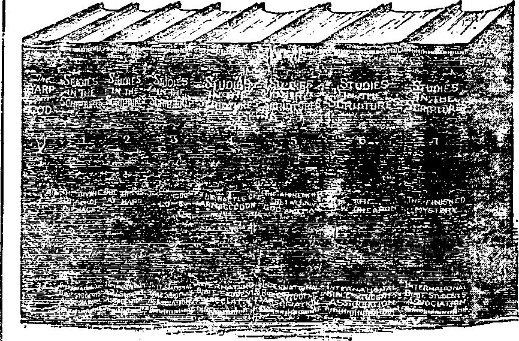

* latt'ijn.
9
$ 1.00 a Ye ar
54 a copy
THE PEOPLE
WITH ROOTS
ITEMS ON ACCIDENTS
EDUCATION
AND SALVATION
Canada, andJoreurn Countries $
FEDERAL RESERVE BANDITRY
OLD
WORLD
DYING
VbL V BiAVeeldy
December 5» 1923
NEV
WORLD BEGINNING
Social and educational Some Items on Accidents
Seculab Education as a Path to sti.v.ui'E-
Finance—( ■ommfjdt.-— Transportation The Federal Reserve Bamhtry
Federal Reserve’s Precarious CoiiUdem
Political—Domestic and Foreign Making Church Members
An Open Letter to Mr. Edward Buk
Science and Invention Tue People with Roots
Travel and Mi-scellany Preacher and Jack-Rabbits
Religion and Philosophy Thanksgiving (Poem)
A Reporter Attends a “Harp” Study...... ....
Pastor Russell’s First P>ook—In Three Parts (Fait ill) . . . . 131
Presence of Christ before Rapture of Church
Published every other Wednesday at 18 Concord Street, Brooklyn, N. Y., H 3. A., by WOODWOimi. HI DGINGN & MARTIN*
Copartners and Proprietors >8 Concord Street. B ool-lpn. y. y„ U.S.A.
CLAYTON J. WOODWORTH . . . Editor ROBERT .1. MARTIN . Business Manager
C. E. STEWART .... Assistant Editor \VM. !•’. H EDGINGS . . .Sr<'\y and Treas.
Five Cents a Copy -Sl.oo a Ykar Make REjnmxcEs to THE GOLDEN AGE FOBSIGN Offices; firitish.....34 Craven Terrace, Lmi<-as.,r Hate. [.-‘tnlon W. 2
Canadian ......... ;;s-4o Irwi’i l\ ir.,-'. i -r.»>,1 ci, omario Australasian.......IDS Collins street. Melbourne. Australia
South African ...... 6 Lelie Street, Cape Town, south Africa
Entered as second-class matter at Brooklyn, J». Y.. under the Act of .March 3, 1878
Volume V Brooklyn, N. Y„ Wednesday, Decembers, 1923 Nam bar lit
SHORT time ago a railway companion was discussing the fact that the automobile is now responsible for the greatest number of accidents of any one thing in the whole category of casualties, and made the remark, “I wish to live. I have two automobiles at home, and from what I have personally seen within the past few weeks I have decided that the only sane course for me to pursue is to sell my cars and keep off the highways as much as I can.”
Based upon available statistics, if you are to meet with an accident of any kind you have one chance today of being hurt in some way by an automobile and only three chances of injury by any other means. If you are to be hurt by an automobile you have one chance of being hurt by collision of the machine to three chances of injury by the automobile in any other way. Next in order are cranking the machine, where the chances are one to four; repairing the machine, one to five; skidding, ditching, or overturning, one to nine; entering or leaving the garage, one to nine; struck by automobile, one to eleven. It thus seems that it is eleven times safer not to have an automobile than it is to have one. The traveler above quoted was right.
IN THE foregoing statement collisions are grouped together. We have not the figures for collisions of automobiles with each other, although we witness them frequently; and they are many. But the figures for collisions with locomotives are at hand and show that by this means 8,101 were killed at grade crossings in America in the past five years and 24,208 were injured. In the last three months of 1922, 517 persons were thus killed and 1,710 were injured.
Some of the causes of automobile accidents •re collision with elevated railroad pillars, poles, trees and hydrants; boarding or alight-mg while the automobile is in motion; vehicle
with no chains skidding on slippery street; running up sidewalks; struck while making repairs on streets; vehicle backing up suddenly; material falling from trucks; view obstructed while crossing streets by bundles carried; sitting on curb and hit by mud guards; stepping from behind elevated railroad pillars into path of vehicle; disobeying traffic officer at crossing; driving on wrong side of street; disobeying signal at crossing; headlight glare; running car in air-tight garage, thus exhausting oxygen; bee sting, dust, gnats or bugs in eye, and involuntary sleep or other cause depriving operator of control of car.
Besides the situations that result in accident there are thousands of cases where accident is averted by a margin so narrow as to seem little short of miraculous. The most interesting case of this kind that has come to our notice is that of Mr. and Mrs. Allen Wallace, of New York, who were out driving the coupe along the Grand Concourse bridge in the Bronx. An autobus ran into them in the rear and knocked the car through an iron fence. In an instant the car was suspended in a network of electric wires where the occupants were in danger of electrocution. A second later it turned a complete somersault and fell twenty-five feet, landing right side up with all four wheels on the ground, but on the tracks directly in front of a speeding electric car. The motorman jammed on the brakes, and in another instant Mr. and Mrs. Wallace stepped from their car unharmed. They had escaped death twice by collision and once each by falling and by electrocution, all within a few seconds.
RESS items which give us some idea of the war which the automobile is waging against humanity are that in the year 1922 the auto deaths exceeded twelve thousand. New York
was first with 849; Chicago second with 736; Los Angeles third with 321. Ninety-one children were killed on the streets of Detroit. Besides the number killed there was an army of 325,000 injured. One car in each thirty-two injured somebody during the year.
For pedestrians the only measurably safe course is always to cross at a corner and to look in each of the four directions before crossing a street, or else wait until the traffic has been stopped.
Many accidents result from the improper loading of trucks. The tendency is to load the trucks to their utmost capacity and then add a little more. The loads are often piled insecurely; and when the trucks have been jolted around a little, some of the load falls off. In the loading of a truck the heaviest articles should always be placed at the bottom; and when unloading the articles should be removed from the top downward, to avoid the crushing of hands or feet.
Children are killed by trucks on the streets of New York every day. Loads which have no place on the highways at any speed are taken over them at railroad speed. The danger from automobiles even extends to some extent into the home itself. In New York, in one instance within the past few months, a car ran wild, climbed a porch, and killed a baby in its cradle.
FOR at least a million children in New York city there is no place to play except the street. Always a dangerous substitute for a playground, the public streets are now avenues of death. Driving rapidly in a taxicab through one of these streets, many of them occupied by scores of little folks playing unconcernedly in and among the vehicles, one cannot wonder that so many of them are slain or crippled for life. The stealing of rides on vehicles continues to be a fruitful cause of accidents to children.
Both children and adults are killed by the hundred because they try to cross the streets at some other point than the street intersection. This practice, called “jay-walking” in New York, resulted in the injury of 6,168 persons during the year 1922. In a single month the police of New York warned 8,000 persons of the danger which they were incurring in thus crossing the streets except at the authorized places.
But no blame that can be laid upon the fre- iCv quenters of the streets can absolve automobil- ! ists from the accidents for which they are responsible. No person has any moral right to ; traverse the streets of a city at such a speed that if some person aside from himself makes a slight miscalculation it may result in his death. Yet there are thousands of drivers, and their ranks are being added to daily, that take chances—chances with the lives of others and with their own.
Some of the accidents are caused by defective vision. Near-sighted people cannot see at a distance without glasses, and far-sighted people cannot judge nearby distances with sufficient accuracy to prevent accidents.
New York has adopted a plan of ringing bells and blowing whistles at 2:59 p. m., as a warning to truck, taxicab and automobile drivers to be careful; for 1,200,000 pupils are going home from school.
IT IS with a measure of relief that we turn ■ from the ever-increasing list of automobile accidents to consider the encouraging fact that in America the danger on railroads is now less than one-third of what it was in 1889. In the thirty-four years in which accident figures have been tabulated there has been a gradual improvement, the most recent years being the safest of all. In 1920 one person was killed to each 5,673,000 carried.
The operation of the 250,000 miles of American railroads in 1921 resulted in the accidental death of 5,587 persons and the injury of 43,324. The operation of the 50,000 miles of British railways resulted in 20,285 accidents of all kinds during the same year. In the same year also only four passengers were killed on Canadian railways out of a total of 51,318,422 carried. It has been observed in America that since prohibition went into effect the number of railway accidents has been greatly reduced.
The human factor enters largely into rail- ;
road accidents. A tower-man does his work j
with unfailing accuracy for twenty-four years;
not a serious error is chargeable to him. He I reaches the age of sixty-eight. He supposes that he is as well able to do the work as ever;
his employers suppose the same. He throws
the switch against the midnight flyer between - Philadelphia and Atlantic City, causing it to be
ditched with the loss of seven lives. How could the railroad company know when to retire this always faithful servant! Who can answer!
" It is evident that for a long time to come
there must be numberless accidents on highways and railways, unless the speed is greatly ' reduced. Probably one of the early steps which
the Lord will take in His control of earth's ( affairs in the near future will be to lessen
i C speeds of vehicles to a point where they will still serve all human needs without risking human life.
No doubt also many railways and highways will be relocated, or partially so, to remove their da tiger points. Modern methods of excavation and •‘on.structiOTi would enable many railroad ■ lines to be straightened and greatly improved
frnni every point of view, if only the incubus of ’lie necessity for profit could be removed . even temporarily and it was necessary merely
to consult the interests of the public. All this will surely be done; and then the old road beds can be used for automobile traffic.
Haste is responsible for many accidents about railways. Cars must be unloaded immediately upon receipt, so as to save demurrage charges; and the work of unloading is frequently done when the men are fatigued and the light is poor. These conditions make for error of judgment, . and error of judgment causes accidents.
Municipal Railways
New York City has occasional railroad accidents of a different nature from those found elsewhere. Once in a while an elevated train, or part of it, goes off the structure into the street thirty feet below. Almost every elevated accident results in several deaths.
C In one instance, years ago, the trains became stalled between stations, and several persons started to walk the tracks to the nearest station. A train started suddenly; and a boy's body, projecting from the aide of the train, where he had caught on, swept seven persons te their death, plunging them into the street below.
More frequently there is a subway accident, and the wonder is that there are not more. One that has never been in a subway jam during the rush hours can form no adequate idea of the
hurrying, struggling, pushing mass of humanity, all seeking to get home at the same time.
Joseph Gallo and his wife were caught in such a subway jam when they arrived in New York on the way from their ranch in the West to visit friends in Czecho-Slovakia. After the wife had boarded the train, the doors were suddenly closed in front of Joseph. Poor man, he did not know that the only thing he could do was to take the next train and then, not finding his companion, to report the matter to the police. So he started to race on foot after the train, and wandered about in the tunnels for hours, dodging trains and in imminent danger of electrocution. Meantime his poor wife, alarmed and distressed, after having tried in vain for several hours to locate her faithful mate, broke down and was taken to Bellevue Hospital, where she died of fright.
The subway is the safest railroad in the world; but it has its tragedies, all due to haste. Moreover, the haste seems necessary, for the people must get home; and how the difficulty is to be rectified at this time does not just now appear. More subways would help, and are being built
SOME years ago it was figured out by a genius with a penchant for figures that a man stands more chances of being killed in his own home by some unlooked-for accident than he does of being killed while a passenger on a railroad train. This is probably true. On the railway train the engineer and the fireman are equally interested with the passengers in saving their own lives. In the home many unexpected accidents may occur, and there are causes of danger not found aboard trains.
An analysis of 373 accidents at home shows 44 injured while working around the barn; 42 slipped on lawn, steps, porch or boards; 39 cut on bottles or sharp instruments; 29 fell on stairs; 24 using hand tools; 22 slipped on rug or floor; 18 ran into beds, bureaus, doors, etc.; 14 hit by falling objects; 13 by lifting and moving articles; 11 scalded or burned while cooking or cleaning; 8 cutting corns or nails; 8 fell from ladders, trees or windows; 7 bitten by pet animals; 7 poisoned or infected by insect bitea; 6 burned while lighting cigar; 6 fell from chairs or tables or upon getting in or out of bed; 4
carrying children; 4 finger caught in door or window; 3 slipped in hath-tub; 33 unclassified.
Numerous home accidents are due to gas leaks. In New York city, during the first ten months of the year, 2S2 persons were killed by gas leaks. Occasionally the fumes from a gas-heaxcr kill a whole family. In one instance a cat turned on the gas, and killed itself and a child.
There are a number of deaths due to electric shock. A man steps into a wet cellar, the water in which has been charged by an electric wire; or he attempts to turn the electric lights on or off while standing in a bath-tub. Many persons do not know the danger attached to touching an electric light fixture, especially with wet hands, when they are at the same time standing or sitting in a tub of water.
Occasionally what looks like a terrible home accident turns out differently from what was expected. In New York, Mrs. Veechio saw her baby fall from the fourth-floor fire-escape of their home. She ran screaming into the yard, expecting to find the child dead, but found it unharmed, bouncing up and down and enjoying itself in the pillows of a baby carriage into which it had fallen.
NEXT to what may be called public accidents, the largest number of accidents are those connected with occupations. In a single yer.r in New York state the accidents to children under eighteen, sufficiently serious to keep them away from work at least two weeks, were 1,983. The accident hazard with youthful workers is greater than that with the mature; for children are by nature more irresponsible, careless and curious.
In a single year, in the country as a whole, twenty-three persons were killed at their employment and three million injured. Five out of every hundred persons employed, every year sustain injury of some sort.
A study of the nature of the accidents reveals the fact that twenty-five percent were caused by machinery, twenty percent by some flying object, thirteen percent by falls, ten percent in the handling of objects, and eight percent from hand tools.
This study, made officially by the State of Wisconsin, discloses the fact that, contrary to the usual .impression, the number injured as a result of carelessness on the part of the worker is not large. There is of course a human element in all accidents: Ignorance, inexperience, indecision, all leading to error of judgment.
The annual loss in America, due to industrial accidents, is said to be not less than one billion dollars. A man is killed by industrial accidents every six minutes, and one is injured even’ fourteen seconds. One thousand persons are killed every year by falls from ladders.
PUBLIC attention is more riveted on mine horrors where a hundred men are killed at a time than it is on the lesser accidents, in _ which but one man loses his life; yet the history of one year after another shows that one-half of all the miners who lose their lives while at work are killed by falls of rock or coal, only one or two being killed at a time.
In America the number of deaths in mines averages about a hundred a month, while the injuries are a hundred times as many. The following table shows the surprising regularity with which deaths and injuries in mines occur from year to year:
Year Number of Deaths Number of Injuries 1919 1,183 118.529
1920 1,130 118,490
A thoughtful consideration of the foregoing figures will convince almost anybody that mining is not so safe a business as clipping con-pons, or talking over a telephone, or sitting around a directors’ table; and that it should be as well paid.
Mining is fifty percent safer now than it was fifteen years ago; for there are thus many less accidents. Many mine accidents are seemingly unpreventable. Some explosions have occurred because flashes of lightning have entered the mine and reached gas pockets or else have prematurely fired shots. One would suppose that in a mine one would be safe from lightning; hut it seems not to be the case.
Other accidents are preventable; there used to be many such. It is only a generation since coal-breakers were built directly over the mouth ~ of the single shaft; and when the breaker burned and fell into the shaft, not a man remained to tell the tale.
VEN as late as August 27, 1922, forty-seven lives were lost in the Argonaut mine, in California, because a safety exit required by law had been plugged up by the mine owners to save the possible cost of draining the shaft. Those mine owners should be sentenced to become miners for life.
Some of the great mining disasters of the past year are the gas explosion at Spangle, Pa., in November, a year ago, when 71 out of the 118 men in the mine were killed; an explosion at Bessemer, Alabama, in the same month, when 86 were killed; one at a mine on Vancouver Island, in February, when 33 perished; and one at Dawson, New Mexico, on the same day, when 120 died and only two were saved of all that went into the mine. Less than ten percent of all mine fatalities are caused by explosions of gas and dust.
Allied to mining is the business of quarrying. One-eighth of the men in this business receive injuries every year, and one in fifty is killed. The causes of quarry accidents are haulage, explosives, machinery, and falls of material, in the order named, with haulage as the most prolific cause. Every once in a while a fatal accident results from the common practice of using the teeth to crimp blasting caps to fuses. Other fatal accidents occur from dropping dynamite cartridges into deep holes instead of lowering them slowly and safely.
The smelting business, still dangerous, is safer than it was. In 1913 the rate of injury was 264 to a thousand employes; in 1921 it was reduced to 63. This great decrease is said to be almost entirely due to the many safety devices installed by the American Smelting and Relining Company to reduce their accident liabilities.
One of the world’s greatest industrial accidents occurred at Oppau, Germany, in the Fall of 1921, in a plant engaged in manufacturing nitric acid and ammonia from the atmosphere, for fertilizer purposes. A double explosion occurred, killing 586 persons and injuring 1,952.
A very considerable toll of human life is taken annually by explosions of boilers, gas tanks, sewers, and chemical apparatus of va rious sorts. It is not generally known that even five percent of gas in the air forms an explosive mixture. The increasing use of chemicals, especially poison gases used for commercial purposes, to disinfect or to rid goods of vermin, causes many deaths.
rpiIE increasing use of women in manufactur-ing operations brings a danger peculiar to women. Some terrible accidents have happened to them by reason of their hair catching in the machinery. At the plant of P. F. Collier Company, on one occasion, one poor woman was thus scalped completely; and the pity of it was that she survived and ran screaming through the plant. It is needless to add that every woman engaged in manufacturing operations should wear a close-fitting cap. Also, women many times have had their lives endangered by loose-fitting dresses and flying aprons; for swift-moving wheels and belts form a suction.
Only the great strength of a fanner engaged in operating a circular saw saved him from a terrible death. His clothing became caught, and dragged him toward the revolving blade. He braced himself while the machinery stripped his overcoat, sweater, trousers, shirt, and underwear to shreds, so that when the danger was past he was entirely nude save for his shoes and socks. Both men and women should wear close-fitting clothing when working about machinery; and all moving parts of machines should be enclosed in gear cases, to minimize the risk.
An unusual accident happened to some electrical welders. They were repairing a cracked cylinder, and had neglected to examine the interior of the cylinder before beginning their work. While the work was in progress, a little steam was noticed; but no attention was paid to it. Just as the job was finished, the cylinder exploded with terrific force, seriously injuring two men and almost wrecking the plant. The cylinder had contained just enough water to turn it into a miniature boiler, with no outlet for the superheated steam generated.
A machine that should be given a wide berth is the hydro-extractor, sometimes called a “centrifugal” or “whizzer,” used for separating liquids from solids, extensively employed in sugar mills, dye houses, laundries, and industrial plants. High speed is essential to the effectiveness of these machines; and numerous accidents, some of them fatal, have been traced to them.
Tp ALLS are responsible for many deaths and J- injuries. For several years New York had a peculiar attraction in a man that had trained himself to climb the face of buildings. This man, popularly called the human fly because he had learned to climb merely by the use of his finger tips, had painted in large letters across the back of his shirt the motto, "Safety Last.” He fell ten stories to his death while scaling the front of a hotel for a movie film.
More fortunate was a window cleaner in the same city. He fell five stories, and was taken to the morgue to be prepared for burial. While in the morgue he regained consciousness, and objected strenuously to the program that had been mapped out for him. They were just about putting him into a vault.
One of the worst features about falls is the liability of injury to the brain. A severe blow upon the head, even though the skull is not fractured, is liable to do far more harm than is a broken arm or leg. Carpenters, bricklayers, masons, painters and electrical workers are in special danger from falls in connection with their work, as so much of it is aloft.
NEW YORK and Chicago, on account of their great numbers of immensely tall buildings, have many elevator accidents. In the last eleven years, in these two cities alone, there have been 1,122 fatal elevator accidents. The Bureau of Standards of the Department of Commerce has made a survey which shows that three-fourths of these accidents could have been prevented if the elevators and shaftway doors had been equipped with well-designed interlocking devices.
Rarely does an elevator fall; the typical accident is where a person tries to board a moving car, but slips or stumbles and falls into the hoistway. Or a workman opens a hoistway door, reaches in to grasp the operating cable, and loses his balance. Or a woman steps off a descending elevator and the operator starts the car too soon. The woman changes her mind, tries to step back into the car, and is crushed between the landing and the top of the elevator door opening, as the car goes down. There are elevators in New York which travel forty miles a day and make 4,000 stops in that time.
Even the public structures take their toll Some two years ago the public was shocked when a bridge collapsed at Chester, Pennsylvania, causing the death of twenty-four men, women, and children. It transpired subsequently that the cause of the accident was the ramming of the bridge by a canal-boat eleven years previously, regarded as trifling at the time.
Many of the drownings which occur every summer would not occur if there were at hand persons who know the proper methods of resuscitating those who have been in the water for some time. It is claimed that the pulmotor is not a success. It strains the tissues of the lungs, and in almost every case the patient dies from pneumonia within a year. The hand methods are easy to learn and to apply, and do not injure the patient in any way.
WE HAVE often wondered how accidents will be prevented during the time of Messiah's reign and subsequently. We believe that such will be the case; for the Scriptures declare as much. Of some things we may feel sure. People will know that they have all eternity before them, and 'will not be in such a hurry ' as now; speeds will be reduced. Instead of railroad trains running from sixty to a hundred miles an hour, their speed will be reduced to what is then known to be absolutely safe, maybe to only thirty miles an hour; automobiles will be harmless, and flying machines not tolerated at all unless they are proven safe beyond all question. And above all things the engineers, chauffeurs, and aviators will be tamed; and no one with a speed bee in his bonnet will be permitted to operate any kind of a machine for locomotion.
Again, people will know that the things they make are made to serve as long and as satisfactorily as possible, and as a consequence machinery will be perfected to a point where only carelessness would be liable to cause an accident Every man will love his fellow and will try to avoid injuring him or even permitting him to injure himself.
In the third place, men will become Godlike, and that means that they will become thoughtful, careful and considerate not only of others but of the wonderful bodies which God has placed in their own care.
THE people with roots grow the same as other people, except that they grow much taster. If we had a boy that got into the habit of growing an inch every eleven days, we would take him to a doctor to find out what could be done to stop it; yet that is the rate of growth of the average plant.
The growth of plants can be seen by means of the crescograph, an adaptation of mirrors which magnifies up to a hundred million times. By means of this instrument, the invention of a Hindu, Sir Jagadish Chandra Bose, the effects of heat, cold, electricity, light, alcohol, and other things affecting plant growth can be seen, and precise conclusions reached.
The effect of alcohol on plants is much the same as on humans. At first the plant acts exhilarated; subsequently a serious depression is noted. In the matter of light, plants may have too much as well as too little. Unless the proportion of light is right the plant will not reproduce. A length of day favorable to both reproduction and growth results in the “everbearing” type of fruits. Light has a more important hearing upon plant growth than has temperature.
By shortening or lengthening the plant’s hours of work, i. c., its hours of light, vegetables such as spinach, usually available only at certain seasons, can be supplied to the table the year around. Violets also may be grown in any season; and poinsettas, heretofore regarded as a Winter flower, may be grown in July and August.
Plants grow more rapidly and with greater vigor in tin cans than in ordinary florists’ pots. One of the probable causes of this is the stimulation due to the metals of which the can is made. Plants do well in any soil that is even slightly impregnated with metal particles.
There are thirteen chemicals used by plants in making their growth. Ten of these are usually present in sufficient quantity; but nitrogen, phosphorus and potassium, usually in the forms of ammonia, phosphoric acid and potash, are things continually being taken out of the soil, and therefore requiring to be replaced.
It has been suggested that the spread of plant pests in Ainerica, where formerly there were almost none, may be due to impoverishment of the soil. It is also suggested that as humans take diseases when their food is insufficient or unbalanced, the same may be true of plants. In any case it may be set down that malnutrition of plants will result in malnutrition of the people who eat the plants and their fruits.
There is considerable evidence available that by means of recent discoveries certain plants can be caused to grow ten times or even a hundred times faster than heretofore, making reforestation and a thousand kindred problems merely questions of convenience.
ETURNING to the invention of our Hindu friend, Sir Jagadish, it seems that carrots visibly register anger and pleasure, while potatoes and turnips, after an alcohol jag, manifest the same lack of interest in life, while they are sobering up, that some men do on the morning after a wild night.
It is a good thing for plants to be washed occasionally, just as it is for boys. Moreover, the washing should be with soap and not merely sufficient to spread the dirt nicely from one place to another. And what is of equal importance, the under side of the leaves of the plant specially need washing, like the back of the boy's neck and behind his cars; for it is there that the microbes chiefly gather.
It is found that rabbits inhabiting the oak zone of mountains act as a barrier to the spread of cacti. The plants can go neither up the mountain nor down it; for the rabbits effectively destroy them when they come within their zone.
Some plants have the faculty of motion. One of these, the Volvor globator, as viewed under a microscope, whirls like a top. Other plants manifest a freedom of choice as respects where they fasten their tendrils. After having occupied a hole in a post thirty-six hours, a tendril has been seen to withdraw itself for anothei hole in the same post more to its liking. Where several holes are available, the plant’s tendrils may pass several before finally deciding per manently where to remain.
Some plants are strictly vegetarians, most of them, in fact; but at least one, the eats,
flies and other insects. When these insects alight on the upper surface of the leaves, the leaves close in on them; and the plant becomes their tomb. Occasionally somebody from the tropics reports a tree with tentacles which suck tbs blood of any animal that comes within reach. The existence of such a tree is doubted, however.
Like some human beings the century plant dies when it makes its crowning effort. The Agave attenuate, as it is called botanically, waits until the erd of its life to bloom. It then throws out a spike that may have as many as a thousand blossoms; but the effort kills the plant. The many young plants which, in the meantime, have formed around the base of the trunk, may then be taken off and planted.
SOME plants, like some persons, injure that with which they come in contact. Prominent in the list is the well-known poison ivy. This may be distinguished from other creepers by the fact that it has three divided leaves, while the harmless creepers have five leaves.
Ivy poisoning may sometimes be averted, even after the plants have been handled, provided that the parts exposed are washed with great thoroughness with soap, water, and alcohol. An inefficient washing only tends to spread the poison. The affected parts should be bathed with warm salt water, preferably sea water, and dried without rubbing. Another good treatment consists of one teaspoonful of boric acid in a quart of hot water. People have been known to die from poison ivy. When specimens of that plant have been brought into the house, they have been known to poison the whole family. When thrown into a fire, the poison is carried through the whole house.
It will be news to many that potatoes sometimes cause poisoning. This is when they are harvested prematurely. The green parts contain a poison called solanin, 0.2 grams of which are sufficient to produce bad effects. There is always a minute quantity of this solanin in potatoes, but not enough to do harm when the potatoes are mature, unless they are old and cooked with the sprouts on.
Concerning poisonous plants in the state of Utah the Salt Lake City Telegram says:
“Th* loves of livestock within Western national forests and largely in the State of Utah from poisonous plants aggregated about six thousand cattle and sixteen thousand sheep during the past year, according to a report issued by the United States forestry service. The principal poisonous plants on the ranges are the locos •nd lupines of the pea family, to which also belong the alfalfas and vetches; water hemlock or poison parsnip of the parsley family, which includes the much relished vegetable celery; death camas; bunch flower family; and the much dreaded larkspurs of the crowfoot family, of which are the buttercup and the peony.”
This finding of poisonous plants which are closely akin to some of our safe, sane and highly prized vegetables and flowers shows that even the vegetable families, as some human families, have their black sheep.
WE PROPERLY place the highest valuation on our old friends; but it is well to make some new ones, also. We introduce you to several new ones. They have excellent traits. There, for example, is Burbank’s new blackberry bush, which has all the good qualities of the old blackberry but is without its thorns. It is a sort of reformed blackberry, so to speak.
Then there is the hydra-headed barley. We do not know where it is grown; but it has several heads, with a combined length of fruit on one stem of ten to twelve inches as against three to four inches on the ordinary one-head stem.
Then there is the kaa lee of Paraguay, more aristocratically known as the Stevia rebaudiana. This plant is one hundred and eighty times as sweet as sugar. Uncle Sam has some of the seed, and is experimenting with it. Perhaps we shall hear more of it later, and then more people will be sweet, and the sweet ones sweeter.
Then there is the soap plant, which blooms in June or July, and which is found all through the southwestern portion of the United States from southwestern Kansas to and including California. The roots are one to ten inches in diameter and two to sixteen feet long, very saponaceous and produce a fine lather. The soap plant has been used for centuries for cleaning purposes by the residents of those parts. We have some of the powder. The lather is very agreeable to the touch.
As a hint of what is coming, H. F. Hanes, a farmer of Willow Glen, Louisiana, near Alexandria, planted Irish potatoes this Spring in a field whereon last year he had raised a large crop of tomatoes. To his surprise he found that one of his potato plants had borne tomatoes as well as tubers. It is understood that Burbank has been trying to bring this about, as the plants are known to be of the same family; but in this isolated instance Nature has boat him to it. But unfortunately she has not left a record of how she did it.
Plant lovers have large expectations based upon the experiments of Richard Diener, whose nursery is near Mount Tamalpais, California. In three years he has tripled the size of half a dozen well-known flowers, and has developed a blight-proof tomato bearing fruits weighing three pounds each; also a mammoth potato. He says, and seems to have proven, that plant and animal life may be greatly increased in size by a scientific process which he has discovered* One of his products is a white leghorn rooster weighing ten pounds. It is hoped that its prog- , eny may lay mammoth eggs.
Interesting results may follow the planting, of some seeds found in the tomb of King Tut-ankh-Amcn. Hungary reports the wheat grown < from some of this seed as of excellent quality.
REVEREND Doctor George Hugh Birney, of Cleveland, Ohio, is authority for the statement that “if Christianity had been one tithe as much interested in building itself into the hearts of men as it had been in building monuments to itself in cathedrals of stone and brick, the World War never would have been fought.” Just what we have been saying all along. In due time some of these preachers will get converted and become real Christians. Wait and see.
The Gastonia, North Carolina, Gazette speaks of one of the gentlemen engaged in local “evangelistic” work as follows: “It would pay the mill owners of Gaston to keep this man in the county, for reasons other than the great spiritual good he has accomplished. He is veritable poison to the agitator, and never fails to take a telling crack at them when the opportunity presents itself.”
Somehow we seem unable to recall that any of the apostles were engaged in that line of endeavor. No doubt if Gaston business men are selling all the goods they wish to sell, then an apostle of low wages in their midst would be something they would appreciate.
Purely as a matter of good business, and, according to the despatches, not because they themselves are connected with any church, the business men of Riverside, California, have organized a campaign which has as its aim the bringing of every Riverside child into some Sunday school and every family into some Riverside church. The decision to embark upon this enterprise came after a discussion of the needs of the country.
No doubt these business men came to the conclusion that what the country really needsj is more principle, more Christianity; and, misguided on the subject, they thought the best way for people to get it is through the denominational churches.
Our thought is the reverse; namely, that if ? all the saints and all the hypocrites who are attending churches would abandon the church' systems altogether, and thus avoid participation in their sins, the whole world would be far better off. Everybody could tell then who are the children of God and who are the children of the devil; but when all look alike, talk alike, act alike, and belong to the same organization it is hard to draw the line. Christianity is an individual matter.
Hamilton, Ontario, is having a probe of its1 Y. M. C. A. It seems that this institution has* made a specialty of teaching the youths of the ■ city how to play pool, with the result that some of them have become gamblers, and one of them has just recently shot and killed one of his comrades. Where did we see the sign: “Body, mind > and spirit; cigarettes, pool, and gambling; pay. now; $5 a throw5’?
The Y. M. C. A. makes a nice door into almost any one of the denominational churches. That is the particular office it is supposed to fill. It wants to “save” the young men, even if ’ it has to destroy all their home principles and ■ take all their loose change in doing so.
PASTE this in your hat, Mr. Bok! If governments would draft all able-bodied men into service and take over excessive private wealth during the period of emergency there would bO no more war.—The Pathfinder.
WHILE the world is proudly excited over the tally marvelous transcontinental flight accomplished by Lieutenants A. Macready and G. Kelly in our day, the age of marvels, still, it is well to remember that the human fliers have a long way to go in order to cope with at least some of the members of the fowl kingdom and especially so with the arctic tern. This bird breeds as far north as it can find land for nesting, and winters as far south as it can find open water for feeding. It is said that the arctic tern journeys about 22,000 miles annually. It journeys 11,000 miles between Summer and Winter homes. The arctic tern's annual migration is equivalent, practically so, to circumnavigation of the globe.
The ornithologists tell us that the longest single flight of any known bird is the flight over the Atlantic ocean and the Caribbean sea, made by the golden plover from Nova Scotia to South America, the distance of 2,400 miles. The golden plover breeds on the barren grounds of the far north; and its autumnal migration is overland through Labrador to Nova Scotia, and from there over the Atlantic and the Caribbean sea to its Winter home in South America. In the Spring is returns north overland to its Summer home, by the way of Mississippi Valley, to the regions above the Arctic circle.
The Pacific plover, on leaving Alaska, has a landless course of 2,000 miles before reaching its Winter home in the Hawaiian Islands. The range of a nighthawk is from Alaska to Argentina, a distance of 7,000 miles, which exceeds the journey of any other land-bird.
The birds of Central Europe are of very special interest to the people as to their leaving in the Fall and their returning in the Spring again. We will just mention two kinds of birds very well known to Central European people, as well as to most Americans: The Stork and the swallow. Each of these kinds of birds do much flying toward the latter part of each Summer, and particularly so just previous to their departure for their Winter home.
The stork’s autumnal migration is very remarkable. It is a great mystery just how these birds set a certain day as the date of their 'departure, gather themselves to the number of thousands and hover over a certain chosen locality for hours. Sometimes these fly over a certain locality at the altitude of about from four to five hundred feet; but toward their departure they soar so high that one just barely can see them as a whole.
The autumnal migrational departure of the swallows differs greatly from that of the storks. The storks as a rule start their journey any time during the day; whereas the swallows gather together sometimes for days. But no one has been fortunate enough to see them leave, so far as we know; for they evidently take their leave at night. They merely disappear, not to be seen until the next Spring.
The stork clatters a great deal just before leaving; and as a rule the whole mustered army of them join in one loud happy chorus in the air, thus bidding “Good bye” to the dearly beloved home of their birth. Practically all the landbirds are at rest at night; they do not fly at night while in their Summer home, but it has been observed and proven that the same birds while on their way south fly at night as well. ,
Mr. W. E. D. Scott, while looking through the telescope, observed birds flying across the face of the moon, among which were recognized warblers, blackbirds, finches, and woodpeckers. Their flight above the earth was estimated from one to two miles.
Other subsequent observations made through similar instruments against the moon at night showed birds migrating at varying heights from GOO feet to 15,100 feet. The birds fly at a high altitude to take advantage of the favorable wind currents.
While the storks and the swallows gather themselves in large flocks on leaving their Summer home, these return in somewhat different manner. The stork as a rule returns to his from-year-to-year nest with much advertising of his presence with his bill on his arrival at his Summer home, letting the dwellers know that his successful but tedious journey has been made. The swallow likewise makes himself known to the village dwellers by much singing pointing to the happy time coming.
The appearance of birds in the Spring has attained a certain pastoral significance in practically all countries. Some hold that it is abso-
lutely safe to plant vineyards, etc., as soon as the stork appears.
The bird kingdom is more than sufficient to convince us, beyond all shade of doubt, of the marvelous wisdom and the great providence of God, the Author of all beauties, manifest even in the birds.
Jesus, while teaching His disciples, directed His words to show the great importance of one’s reliance upon God’s providence, illustrating the same by the fowls, how God cares for them.— Matthew 6:26.
The migration of the fowls presents to us a beautiful picture of Jesus and His migrations, starting with His journey from earth to heaven from Mount Olivet. As the birds on leaving the cold country are seen but by few, so it was with our Lord Jesus. He was seen but by few (Acts 1:1,2, 9) when leaving this cold, harsh world for His home above. He was seen only by those who loved Him and who were interested in Him as one sent from God.
The migrating birds can be seen on the face of the moon as they journey at night, by aid of a telescope; the same is true of Jesus. The moon pictures or symbolizes the Mosaic Law; we shall go further and say that the telescope symbolizes the Word of God, through which only can anyone see God’s doings. Those who look through this telescope (God’s Word) see Jesus from afar, even in the dark night.—Luke 24:24-27; Deut. 18:15; Rev. 5:5; Acts 3:22, 23.
As one could never see the migrating birds at night any other way but on the face of the moon, the reflector of the sun, and with the aid of a telescope, so no one could see, nor would any one ever be able to see, the real Migrator, Jesus, in this six-thousand-years-long night of sin and sorrow except on the face of the Mosaic Law, represented by the moon, which is the reflector of the unobscured light of the true Gospel.
By aid of a telescope we can see to what extent some of the birds are visible when leaving for the south country; but their return is marked by great contrast; they return quietly and unseen. After their arrival, however, they
Thanksgiving
For all the fruit and golden grain, The sunshine and abundant rain, The moon and stars that wax and wane, Give thanks unto the Lord. with convincing force announce their presence by much singing, which indicates a happy time. So too, Jesus has come, quietly and unseen, and with songs of joy for a needy race.
OT much time elapses before these birds begin busily to gather material to renew their forsaken houses, or to build new ones. What a beautiful similitude there exists between the manner of the migrating birds and their return and the second presence of Jesus to the earth I He is present; the trumpet is sounding. Not everybody at once learns of the presence of the birds; some learn, sooner, some later; but all will learn. The chances are that some of the plain expectant folks learn of the presence of the birds sooner than will some ornithologists.
We, too, have many wise (?) spiritual ornithologists who do not recognize the widely announced presence of our Lord; who say that Jesus will not come for some thousands of years yet. But, thank God! there are some of the villagers who perceive the presence of our Lord by the manifold signs of the times which enable them to do so. Thank God, we no longer must reject those signs at the point of the oldtime scare weapon of "excommunication”!
Jesus is now removing the old lining of the house, the work of the prince of darkness, and is relining it with the new material that He has gathered. He how is preparing a place wherein to mother the billions to be brought forth from the tomb.—Hebrews 12: 26, 27. .
It often happens that when the swallows leave their nest over Winter, a sparrow gets into it to raise its family. The swallows on their return find their nest occupied; and if unsuccessful in removing the sparrows, as it often happens, the swallows will carry mud and close in the entrance to the nest, leaving the sparrow within to take the consequences. In Revelation 20 we find a corresponding incident to this, one which shall take place in the future. The devil, too, will be bound and shut up in the bottomless pit for a full thousand years, during which hie offspring will dwindle to few and yet fewer. .
By Irene Davis
For zephyrs and for singing bird, For blessings and each kindly word, That tender hearts have gently stirred, . .
Give thanks unto the Lord. .
WHEN the Federal Reserve Banking System was in the making it was heralded as a panacea for all financial ills, and was declared to be the long-looked-for savior of the farmer, as it would afford him the means by which he could get ready money at a low rate of interest for the harvesting of his crops, the stocking of his farm, and the installing of adequate machinery to carry on his business in the most economical way. But some far-seeing legislators vigorously opposed it, for the reason that they could see the hand of big business behind it and that it would tend toward the enslavement of the farmers, an added lever in the hands of the money power to keep control of farm products by curtailing and regulating the circulation of money so that it would not benefit agriculture.
What big business really saw was the collapse of industry after the war if some financial coup was not devised to stem the tide of disaster. It met the immediate needs and saved the day for industry; but, as a remedy to bring permanence and stability to our financial structure, time will tell that the patient was revived only to suffer more acutely when the death throes really come. The Federal Reserve Bank is thoroughly under the supervision of Wall Street interests and dominated by them. Therefore it did not function for the relief of the rural districts. So severe became the condition of the farmers that the Federal Land Bank was organized. We are told that the Reserve System and the Land Bank should not be confused, as the latter is a very worthy institution and under ordinary circumstances would be a blessing to ameliorate the hardships of the farmers were it not for other vicious legislation and profiteering.
In The Golden Age No. 103 was an article on the “Pirates of Finance,” which showed how the Federal Reserve System is getting possession of all the gold in the country; in other words, how they are practising highhanded banditry and doing it according to law. [Also see The Golden Age No. 55, page 38, article on “Mismanagement of the Federal Reserve System.”] Now we have authentic information how this octopus banking institution sets about to injure and if possible destroy every bank that does not become a member bank of the Federal Reserve System.
We do not know whether there is a graduated Beale of prices which member banks must pay annually to the parent institution, but at least some of them must pay $1,200, or $100 a month, for the privilege. If a bank thinks it is sufficiently strong and independent to transact its business without the aid of the Federal Reserve Bank with its $100 monthly toll it finds itself embarrassed and harassed in a number of ways.
TF A check belonging to a bank not a member J- bank of the Federal Reserve finds its way into some of the membership banks they do not try to collect it, but mark it that payment has been refused. This embarrasses not only the perfectly reliable firm that gave the check but the bank upon which the check is drawn. This leads to ill feelings and the loss of business —results which the Federal Reserve Bank has planned.
Another way of crippling non-membership banks is by returning the check, saying that for such and such a reason it is non-negotiable and therefore uncollectable through the Federal Reserve Bank; or that the drawee bank has “refused to remit at par,” and that therefore the check is returned without presentation.
Another way is to send the checks to other membership banks all over the country, getting their rubber-stamp endorsements on the back, and finally returning them with the notation that they were not honored at the drawee bank, when in fact the drawee bank never saw them, and the checks were purposely sent around to avoid being paid.
Still another way: The regional Federal Reserve Bank will hold up all the checks on a given bank for a given time, without presentation for payment, until they amount to several thousand dollars—$15,000 or more. Then the Federal Reserve will send a representative with the checks to collect in cash this accumulated lot of checks, hoping that they will find the bank short of the cash, in which case the embarrassment could easily amount to a run on the bank and it would be destroyed if it did not sign up and become a cog in the Federal Reserve looting machine.
It is clear from the foregoing that the object of the Federal Reserve Bank is to have complete control of all the financial interests of the country, and not to allow a substantial banking institution to take care of its local conditions independently, so that such a community might be prosperous while others might be in dire need. The Federal Reserve Bank seems to be intent on making the whole country suffer together, if they are to suffer, and if prosperous the System will take a lion’s share of the profits.
Not long ago, it is reported, the State Court of Kentucky indicted a representative of the Federal Reserve Bank for his unlawful and malicious tactics in connection with handling the Federal Reserve business; and the United States District Court restrained the System from carrying on its 4fhold-up” (accumulation of checks) methods in that part of the country. The Supreme Court sustained the lower court in its decision.
Independent business men of all kinds are thus seen to be in jeopardy. The farmers are not the only sufferers. Big business seeks the control of all industries, the output of all natural resources, the flowing of the water, and the breathing of the air, so that a toll may be extracted from every human being. And it is all right; we must supinely submit to it, and be thankful for the privilege; for it is done for the most part according to law. No wonder there are ominous signs of the collapsing of presentday civilization! No wonder that men’s hearts are failing them for fear of the things coming upon the earth! No wonder that the earth is being terribly shaken! Big business wants a feathered nest on Easy Street; but the Bible says that their gold and their silver will not be able to deliver them in the day of the Lord’s wrath.—Zephaniah 1:18.
ATE in September the American Bankers Association held a meeting in Atlantic
City, in which the Federal Reserve System drew most attention. “Six changes were recommended to save the Federal Reserve from ruin,” was the telegraphic report. Not ruin from bankruptcy, but ruin from reversal of public opinion; for it was emphasized that “it was not an attack on the Federal Reserve System, but an attack to save it from radical attacks on American democratic institutions, foreseen by the bankers, which will be made at the next session of Congress.” They want to save this "American democratic institution” from “politics.” What chicanery 1 What camouflage! Another case of seeking to pull the wool over the eyes of ths American people so that they will notbe arouse* by the “radicals”!
All the bankers want, according to the report of the Economic Policy Commission, is restoration of the provision embodied in the? original draft of the Federal Reserve Act fol? the appointment of two members of the Federal1 Reserve Board by Federal Reserve banks, in order to insure the presence of trained bankers on the board.” A trained banker, in the mindr of the proletarian gentry, is a skilled skinner is currency control by mean manipulation of funds* entrusted to his care, taking the profits for him* self. There are honest bankers who transart' legitimate business, of course; but these as Si. rule are not connected with the pirates in th© upper story of frenzied finance. As the Federal Reserve banks, no doubt, are coming in for just-criticism they desire to pass the buck to th©' Board, by insinuating that its personnel is not up to trained banking standards! ‘
Another proposal is “to secure the services of high-class men on the Board, by having it elect its own Governor and Vice Governor instead of having them appointed by the President.” This means the further centralization 6f power in the hands of the money kings. Other recommendations are: “To have the Governor of the Board made the chairman of the Board; that the Secretary of the Treasury be replaced i by the Under-Secretary as an ex-officio member of the Board; that the chief functions of the< Comptroller of the Currency be transferred the Federal Reserve Board itself”! ‘'
With all the power the Federal Reserve Sys-tern now exercises for the enslavement of the people, by hedging within certain confines the medium of exchange by which business is carried on, it does not take a trained banker to see the dire results from such centralization of interests. Should we be surprised to learn that couched behind the scenes sit the Morgan inter* ests? We should not.
One good thing recommended, which modifies • the foregoing somewhat, is that the Federal' Reserve System should forbid the establishment of branches or member banks in foreign countries in the guise of agencies. It seems that this has been done to some extent; and recommendation is that there should be as amendment to the Federal Reserve Act forbidk ding it'. The report goes on to say: "All traditions and practices of central banks of other countries confine such central note-issuing institutions to the establishments within their own borders. Their outstanding duty is to provide currency for and protect the gold and credit structure of their own countries. It is unnecessary to emphasize the danger of legal and political complications that may arise from such governmental or semi-governmental institutions domiciling in foreign territories,” etc. It seems by this that the Federal Reserve System was establishing a precedent by encouraging the starting of agency banks on foreign soil, which of course would pay homage to the parent institution.
Regardless of the report, and even the rectifying of its business methods, as recommended by the Economic Policy Commission, which surely is exceedingly favorable to fmancialdom, we opine that we shall hear much of the Federal Reserve in the next Congress and in the next campaign.
That there is a storm brewing with increasing fermentation is very clear to anyone who will use his gray matter at all. The conflict is inevitable and irresistible; for those in advantageous positions will never relinquish their hold upon our natural resources voluntarily. The old order of things, the old world, has ended; and as the now-dawning new order will soon be ushered in with Christ as King, in which every man is to have an equal chance according to his character for peace and happiness and everlasting life, the leveling process will be hard on some but a blessing in the end for all.
The accompanying poem, "After the Storm/' by Charles M. Weaver, is quite to the point, We are using it by permission.
After the Storm ......
(Copyrighted, 1922, by ‘'Labor”)
If you wish to know the meaning
Of the rumbling that we hear,
Of the constant social thunder
That is falling on our ear,
Ask the Wall Street weather prophet To inform you of the night.
• If he's honest he will tell you / That a "twister” is in sight.
I would tell such weather prophets Who would, thus their minds console
• There is nothing that will stop it, And you'd better hunt a hole.
. The cloud you now see forming In the economic sky
Will sweep down upon^you, storming ' Mammon’s stronghold, by and by.
’Tis a storm of retribution
To the shearers of the fleece,
To be sure and run for shelter If the danger should increase.
While feigning hope they’re saying,
The storm is passing by,
And the sun will soon be shining In the now beclouded sky.
They have issued timely warning
And your folly lends its force; '■ .
When upon the world it’s broken It will take its natural course.
In its wake we’ll pluck the flower
Of a peace that’s just and true. , i
(From the Bradford, England, Yorkshire Observer)
THERE is something to be said for some of the new theologies from America; they appear to begin so frankly de novo, with no bias whatever from existing creeds and rituals. In some cases the customary ideas of worship are entirely abandoned, but such a charge cannot be brought against a community which has its own hymns of praise and which makes extempore prayer a frequent feature of its meetings for Bible study. With such a body I met last night.
Fewer than fifty persons were, in this instance, gathered in a large room over shop? in the heart of the town. Perhaps in days to come they might be known as Harpites or Rutherford-ites, because they appear to be taking "The Harp of God,” by J. F. Rutherford, of which a copy was supplied to everyone on entering, as the text-book in these meetings for study. Even this statement will not identify them to any wide circle, but if I add that by the same author are “Millions Now Living Will Never Die” and “Can the Living Talk with the Dead?” it will be at once recognized that I had wandered into an ordinary Sunday evening assembly at the headquarters of a local branch of the International Bible Students Association; an association which has made extensive appeal by many systems of advertising, especially w’ith the gripping phrase: “Millions Now Living Will Never Die”
IS ONE of the leading tenets of the I. B. S. A.
A sub-title of “The Harp of God” is, “Conclusive Proof that Millions Now Living Will Never Die.” No attempt whatever is being made here to outline this faith, yet it should be explained that the harp is used as a symbol in Scripture, and this text-book sets forth that the “Instrument of Ten Strings” pictures ten great fundamental truths concerning the plan of Jehovah for the creation of everything that has been created and for carrying out Ills purpose with reference to His creatures.
Symbols need not frighten anybody; for they do not matter except insofar as they instil the underlying ideas. Here the symbolism of the harp is adroitly used as the framework for deliberate theological teaching, communicated with a freshness of expression well-calculated to aid honest seekers after truth in their endeavor to understand the Bible. Much of it is confessedly of the type which reads prophecies of wireless telegraphy and airships in Job 38: 35 and Isaiah 60:8; a clear and particular description of the railway train in Nahum 2:3-6, and automobiles, electric cars and other means of transportation in Daniel 12:4. By way of contrast take the staccato notes opening the tune of the fifth string of the Harp:
“The great ransom sacrifice is the most vital to man of the strings upon the Harp of God; for without it no lasting joy could be had by mankind. In due time its benefits shall result to the entire human race; and all who appreciate it will sing aloud and rejoice with exceeding joy. ... It is the gateway that leads to life and happiness. It is the means of bringing back man into harmony with God. To appreciate this great doo-trine we must understand it. Therefore let us reason together in the light of the dime Word.”
“For edifying’’ last night there was a melody upon the fifth string. Part of the subject had been dealt with at a previous meeting, but no one need have felt himself outside the class because of arriving during the second lesson. The subject was probably never put so clearly into commercial terms. When Adam died there was a debt; Jesus died to provide an asset that balanced the account.
Several times I have been to what I have called study-churches. Never before, not even in Adult School gatherings, have I met with quite the same studious concentration upon the Scriptures as in this meeting. Questions were read from the text-book. Replies were sometimes spoken by those in the audience. “Now is there any further point?” was asked before any thought was forsaken; and the complete observations of the text-book upon any particular phase of the discussion were read before attention was diverted to the next thought. There were no set lessons read from the Scriptures, but few of those in attendance were without their Bibles or failed to turn up the texts to which reference was made.
Much that is in the text-book is more heretical than things for which martyrs died. Undoubtedly the world has grown tolerant. But with the controversial elements I have no concern at the moment—they are largely, if not wholly, the preaching of Pastor Russell.
The leader of this meeting was one who formerly preached “hellfire sermons” which, by the greater light, he now knows to be blasphemy. In his extempore prayer were thanks for the greater insight now obtained into the character of God. Three fervent hymns were devoutly sung—“Hymns of the Millennial Dawn”; and in that humble room one felt there was the spirit beautifully expressed in one of the verses:
“From every place below the skies,
The grateful song, the fervent prayer, The incense of the heart may rise
To heaven, and find acceptance there?*
“Not now on Zion’s height alone The favored worshiper may dwell, Nor where at sultry noon Thy Son
Sat weary by the patriarch’s welt
“0 Thou to whom, in ancient time, The holy prophet’s harp was strung, To Thee at last in every clime
Shall praise arise and songs be sung.4
PREACHER is the name of a quarter blood staghound and three-quarter blood greyhound, well known throughout central and western Texas by the dog fanciers as the winner of every rabbit chase in which he has participated. Although but three years old, Preacher has to his credit 4,000 catches in two years, besides hundreds caught unofficially. He differs from other dogs in that he invariably brings back the rabbit to his master.
Preacher is light gray in color and of extra large size. Many have sought to purchase the dog at a fabulous price, but he is not for sale. He was gotten in a trade at a cost of not to exceed twenty-five dollars, when he was in his first year.
The greyhound readily makes friends with his purchaser. He appears non-homesick if he is kept active and is well fed and kindly treated. He will stay with anyone.
ON ONE occasion there were twenty-five men on horses, with four other greyhounds of note in the chase. The field comprised thousands of prairie acres. Twenty-one jack-rabbits ■were jumped, and Preacher caught nineteen of them. He might have gotten them all, but for the fact that three rabbits jumped simultaneously and Preacher could take after only one at a time. He captured it quickly, but not soon enough to get either of the other two. The hunters regarded this as a most brilliant achievement.
Whenever a rabbit jumps up, Preacher is the first to see it; and when you jump a jack yourself, and turn to find Preacher, you see him tearing after it like the wind in a gale. You see a light gray streak skimming the ground like an earth-thrown rocket going in a straight Ene, not bounding up and down Eke a gaUoping horse. Preacher runs evenly over the surface, kicking back the earth from beneath him and gaining on the bouncing rabbit at every stride. His speed is tremendous. With a fullgrown rabbit in his mouth he can outstrip all other greyhounds.
The jack-rabbit, hard pressed, stops instantly in its tracks and turns to one side, causing the swiftly moving dog to overrun it many yards. Preacher is up to this trick, and loses no time in getting into the new course. He knows barbed wire fences, and takes his time in getting through them. But when on a hot chase only a yard or two behind the rabbit he clears the top wire with a bound.
RING your dog over here! I have two dogs that can’t be beat/’ writes a man 200 miles away; and Preacher is taken there for a competitive chase. The local dogs have every advantage as to location of barbed wire fences and ditches and rough places. But never has Preacher suffered defeat. He is invincible.
On one such venture the local man had two fine hounds that he considered incomparable. A rabbit was jumped by one of them, with the other dog cutting in on the side, leaving Preacher full thirty yards behind at the start. The course was over a swelL The pace was terrific. The rabbit, a long-legged ranger, held well its course; and when it had covered a quarter of a mile Preacher was ten yards in the lead of the other dogs. He picked up the game with apparent ease.
At another challenge this winner of every contest was asked for a hundred miles away, by a sportsman having two first-class dogs which he thought were unbeatable. The rabbit jumped cover with the local dogs many yards in the lead. Preacher started. Over the hill went the rabbit and three dogs at top speed and into a cotton patch of thick growth. Moments had passed. "Well, they've lost 'im” said the local man. "I rather doubt it," said the owner of Preacher. "Here! look what's coming!” and around the brow of the hill raced Preacher with the rabbit in his mouth.
"I can’t understand that,” said the local man, Tm not satisfied. Something has happened to my dogs.” Presently over the hill came the beaten dogs. “Must have another trial,” said Mr. Local.
Another long-eared jack was jumped, Preacher again the farthest from it by many yards. Up over the hill again went the pack at: a killing pace, and Preacher came back with the rabbit. “I’ll buy that dog at your price!” “No, Preacher is not for sale.”
"Watch Preacher” is what the riders say when on the chase. “Never mind about looking
Dbcembeh 6, 1923 >
for the rabbit. Preacher will see it before you do. Just watch Preacher.”
“Look there! See Preacher! He’s after one. But where is the rabbit? I don’t see any rabbit. Where is it?”
That light-gray streak is cutting the prairie grass and weeds in a straight line. The rabbit is over a hundred yards away and clearing ground in four to six yard leaps, trying to get away. No use 1 Preacher has seen him; and that spells doom to Mr. Rabbit unless he can reach a patch of tall weeds. Greyhounds go only by sight, not by scent. The rabbit is overhauled. Another victory for the champion rabbit dog.
WHAT’S up now?”—Preacher is going on three legs, a sand-burr in his left forefoot. No matter; at the jump of the rabbit down goes that left fore-foot. Preacher kicks away that sand-burr in short order and over the prairie stretch go rabbit and hound amid a cloud of dust; and Preacher brings the rabbit back.
Usually Preacher has a running mate to assist in the catch, but it is Preacher that nabs the nimble jack. He it is that gets the fleet-footed jumper at the last turn. Swiftness combined with intelligence and experience makes Preacher the dog that he is.
Were nominal preachers as successful in getting what they go after—cash and souls—as is this wonderful dog, they would not be what
the prophet Isaiah says they are. Bible Students would have to hustle harder to gather the gleanings. .
Preacher thoroughly understands his business and attends strictly to it. He is not interested in politics, conscription, Liberty Bonds, nor the Red Cross side lines. But war is on his program. He is a killer. He eats a whole rabbit at a meal; but if it is fed raw he does not run so well. For the chase he is fed on cooked meat; with that he is at his best, and unbeatable.
Did you ever hear the riders’ “Hike, hi-i-ike” yell when the rabbit jumps up? That makes the dogs look up to sight it. Preacher needs no yelL Almost invariably he sees the rabbit first, and is away in hot pursuit, a whitish-gray rocketlike streak skimming the earth in gigantio strides. Four thousand rabbits succumbing to one dog in two years is phenomenal.
What wonder that Preacher is so extensively known and admired! His home is near Purvis, where jack-rabbits are very plentiful. His female mate, Queen, is taking lessons from him. She is one year old and her fleetness is such as to make Preacher look well to his laurels, lest she beat him at the game. But Queen is not so alert on the barbed wire proposition, and consequently gets cuts and bruises.
Preacher boasts not of his achievements. Neighbors aid in his upkeep for the good he does. When he dies he will be buried like any other dog, without coflin or tombstone. But he will be remembered.
Deab Mb. Bok : I see in the papers that you are offering $100,000 for the best plan to end war. This will be a difficult task while many throughout the world, even in Christendom (Christ’s kingdom?), believe that war is honorable and necessary, and that it develops patriotism, bravery and heroism, and gives glory to those who participate in it.
Many so-called Christians also believe that wars are the “destiny” of the race, and that Christ was indirectly indorsing wars when He said: “There shall be wars and rumors of wars.”
Now I realize that it would be a heruculean task to change the minds of those who believe the above tenets; but those thus believing should not be deprived of all the honor and glory and whatever reward God should see fit to bestow upon those who thus help Him to fulfil His purpose.
So those who thus believe should not be deprived of getting to the fullest extent all that war gives, by participating in war to the last degree, not by sending others to do the fighting but by going to do the fighting themselves.
Then there is an increasing number who believe the Bible statement: “Be not deceived; God is not mocked: for whatsoever a man sow-eth, that shaH he also reap.” Thus, if one sows war, hate, destruction, pain, anguish and sorrow, the harvest must he the same as the seed sown.
Christ said: 'Tut up again thy sword into his place; for all they that take the sword, shall perish with the sword.” When we read history and see what became of Babylon, Medo-Persia, Greece, Rome, Carthage, Germany, and other countries, we are compelled to admit that Christ was right in that statement. The whole world "took the sword” in the late terrible struggle, and it seems to me that all nations are now at the point of perishing. Look how strong a little piece of money the mark was before the last war! How much food, raiment, shelter, entertainment, transportation, and professional service one could obtain for a mark! Exchange was about four marks to the dollar. Now the last account I had there were 204,000 marks to the dollar, and the end is not yet.
With this hastily written preamble, here is my plan to end war:
When war is threatened, let the nations set a day for voting on the proposition. Let all those over eighteen years of age vote. Those voting for war the first hour are to be in the first battalion; second hour, second battalion; etc., etc. But let it be thoroughly understood that all who vote for war are to go to war—no age, sex, or physical condition is to excuse one from going to war after he or she has voted for war.
If one who is seventy-five years old and blind has voted for war, then let it be arranged to find one seventy-five years old and blind to fight on the other side with him, each "to defend the honor of his country.”
If they should contend that they could not see how to fight, they could be assisted to clasp hands and each be furnished with a sword or hatchet (they should be permitted to choose weapons), and at a given signal urged to "go to it, heroes I” Think how inspiring this would be to those younger and more able to fight for the principles of "The world for Democracy,” "Self determination,” "Freedom of the seas,” “Open covenants, openly arrived at,” etc., etc.
The above general rules with minor details to be looked after, I believe, would do more to end war than all the “conferences” ever held. Civilization (?) seems to me to be a queer mixture of “bug-house” ideas. If I kill a person in time of peace, I am restrained of my liberty and may be executed for my deed. If I express my objection to mass-murder or wholesale murder in time of war, I may be sent to prison for twenty years or shot as a traitor.
In war time, if you are born on this side of the creek, or on this side of the pond, or on this side of an imaginary line, you are my compatriot. But if you are born on the opposite side, then you are my enemy. In one war "war industries” are carried on, on a "cost plus” plan; and billions are grafted from the government and the profiteers are allowed to keep the booty. Then the President makes a speech and promises the people that in the next war property will be conscripted as well as personal service and he seems to expect the people to believe him to be sincere and to elect him to office again. For expressing an opinion against war men are kept in prison on a twenty years* sentence five years after the war has closed, and the law under which they were convicted has been suspended; while those who committed overt acta are long since freed and have gone on their way rejoicing.
But do not be discouraged in your efforts for world peace. We are told that the angels sang prophetically, "On earth peace, good will toward men,” while the Babe lay in the manger.
Then the Prophet tells us that the sword shall be beaten into plowshares and the spears into pruning-hooks and that men shall learn war no more, neither shall nation lift up sword against nation, and each man shall sit under his own vine and fig tree with none to molest or make him afraid.
This is a consummation devoutly to be wished!
Men are daring to advocate the abolition of war now as never before. While the world was wallowing in carnage and death, Henry Ford dared many of the pulpit, most of the press, and all plutocracy to go to Europe to try to stop the slaughter.
While the common people want our waterpower developed and our transportation systems unified and made cheaper and more efficient, and while they believe that Henry Ford is the best able to do this job, which the politicians and the money-mongers refuse to let him do as an individual, yet I believe that many want Henry Ford for president simply because they think he will oppose war with all his might*
BY WAY of illustrating the fallacy of lifting man up through worldly education regardless of God's aid, and thus establishing the kingdom of God on earth as it is in heaven, witness the result of six generations of worldly education in the Ptolemy family:
Ptolemy I, son of Lagus, known by the surname Soter, became famed for the fact that he was interested in the arts and sciences. He was the founder of the library and museum of Alexandria, and spent vast sums for the advancement of education. He entertained at his court Stilpo the philosopher, Zenodotus the grammarian, Euclid the geometrician, and many other learned men of less note.
Ptolemy was succeeded by Ptolemy H (Phil-adelphus), himself a great student and a pat-ronizer of learned men. Besides adding many treasures to the library of Alexandria, tradition has it that by his orders the Hebrew Scriptures were translated into the Greek; and thus the version called the Septuagint was formed.
Next came Euergetes (Ptolemy III), a scholar and contributor to the Alexandrian library. He in turn was succeeded by Philopator (Ptolemy IV), an extremely unworthy son, yet one who followed the lead of father, grandfather, and great-grandfather in patronizing the arts and sciences.
Then came Epiphanes (Ptolemy V), who married Cleopatra, daughter of Antiochus. Their son Philometor (Ptolemy VI) next succeeded at a very early age. The government affairs were administered for a time by his mother, who administered well, but who died in 173 B. C. At her death Philometor was taken prisoner by Antiochus, whereupon Philometor’s brother Euergetes (Ptolemy VH) ascended the throne.
There were several other Ptolemys of less note. It will be seen that these seven comprise six generations, and that all except Philometor were interested in the arts and sciences and the advancement of education. Let us now see what all this education came to. We read in “Chambers' Encyclopedia":
"Ptolemy VII, or Euergetes II, best known by the nickname Physcon, or Bigbelly, ascended the throne after the death of his brother. He married his brother's rister (who was also his own sister), and on the same day murdered her infant son Ptolemy Eupator, whom she had at first declared king. The history of his reign is one unbroken record of murder and blood, whence his subjects named him Kakcrgetes (the malefactor).
“Not only relatives who stood in his way to the throne, but those who opposed his accession, even innocent persons, were butchered with savage cruelty. His private debauches and vices were equally infamous. He divorced his wife and sister Cleopatra to marry her daughter by her first husband, his own brother; and was temporarily driven from the throne, 130-137 B. C., by the indignation of his subjects. One is almost ashamed to add that he retained the hereditary taste for learning, and patronized learned men."
Thus we see six generations of this family of Ptolemys, educated and thrown into contact with the most renowned scholars of their day, the last of the six sinking to the level above quoted.
Mr. H. G. Wells, the eminent writer, historian, and Socialist, has along with many other modernists repeatedly stated that education is to be the savior of the world. The foregoing account of the Ptolemys would not seem to bear out this claim. Besides, all students of the Bible know that the increase of knowledge which the world is experiencing today is foretold in the book of Daniel. They also know that this very increase of knowledge is prominently linked with the “time of trouble," even to the time of the end. “Many shall run to and fro, and knowledge shall be increased," “and there shall be a time of trouble, such as never was since there was a nation, even to that same time."
Pastor Bussell was once asked the question:
“To what extent should the truth people, Bible Students, educate their children, knowing the shortness of the time between now and the time of trouble, for instance, and also in view of the fact that in any higher education there is a tendency toward infidelity; higher criticism and agnosticism?”
Pastor Russell's reply in part was as follows:
“Children would be better off if they would not go beyond, or much beyond, a common school education. I do not know of a college anywhere that would really do them any good.
“I remind you of a young man who came from India. His father was a native of India and had embraced Christianity; and according to his son, his father was * genuine Christian. So this young man was very anxious to come to America to get his education. Apparently his father was connected with the Methodist Chunk Mission in India, '
“At all events, the young man sought out a Methodist college here. Not having great means, he worked his way through college, and in the four years he spent in getting his education he lost every bit of his Christianity, every bit of his faith in the Bible, and was turned out, graduated, from a Methodist college a higher critic, a total unbeliever.
“The young man subsequently was met by one of the Bible Students, and it was suggested that he attend one of the conventions. He said that he did not have the money to spare. The party gave him the money for his expenses. He attended and was considerably interested, but not convinced; for he had lost his faith to such a degree.
“It was suggested that he should study further, and that he should study the six volumes of ‘Scripture Studies.’ He went through the six volumes, and at the completion said that he rejoiced that he had found God and the Bible again, and the Lord Jesus Christ as his -Savior. He is back again in India, preaching Christ there, and preaching Him from the true standpoint.
“Now I would not run the risk with any child I loved, and I would love any child of mine, I am sure. Every parent ought to love his children. I would not want to do anything for that child that would result in the loss of the best thing he has—his faith.
“It would not be with my consent that my child would go even through the high school; for you will find the same higher criticism now even in the ordinary high schools, and not merely in the colleges. They have these so-called scientific text-books, which teach about man having been a monkey, and dropping his tail, etc.”
Just as Pastor Russell had foretold at other times, this education, a part of the “increase of knowledge,” culminated in 1914 in the great World-War slaughter, the end of which is not yet.
The nominal churches of “Christendom” supported this insane slaughter; but afterwards, becoming the target of popular indignation, they were forced to take some action in an endeavor to clear their “priestly robes,” temporarily, at least.
In response to a demand for some action, the Federal Council of Churches of Christ framed “A Declaration of Ideals and Policy Looking Towards a Warless World.” From this “Declaration” the following extract is taken:
“That Theological Schools and Seminaries be urged by their denominational authorities to provide adequate courses for their students in international problems and their solution as essential parts of their theological instruction, and to open short courses for laymen, equipping them for public work in the new realm of endeavor for establishing the kingdom of God on earth as it is in heaven?'
This “Declaration” was printed by the thousands and circulated by the nominal churches, in the various cities. It would seem that, judged: from past experiences, these people would realize that nothing can be accomplished for the. security of peace on earth except through the heavenly Father; yet they blasphemously advocate a course in international law “as essential, parts of their theological instruction, equipping the laymen for public work in the new realm of endeavor for establishing the kingdom of God on earth,” etc. What has this to do with theology?
“Theology,” the dictionary says, is “the science of God and divine things.” What is there divine about international law? “Theological,” says the dictionary, is that “pertaining to theology.” What, then, has a theological school to do with international law? Nothing—absolutely nothing.
Here again we have an example of -where worldly education leads, when God is left out of the matter, when we fail to recognize that all power rests in Him. Surely it is hard for those rich in worldly goods and endowments, education as well as money, to enter into the kingdom of God. Our Lord through His apostles says: Not many rich, noble or learned are called to a jointheirship with Him in His kingdom; but the poor and unlearned seem to be the favored ones. These naturally see their need of salvation, that they in themselves could not hope to fight successfully the battles of life and come off conquerors. It is easy for these to put their trust in God. Worldly -wisdom leads to pride, self-reliance, and self-sufficiency, which is contrary to Christ’s example.
No; the thought that worldly education of: itself will bring the establishment of the kingdom of God on earth as it is in heaven is a proven fallacy. Only that wisdom that comes from above, the beginning of which is the reverence of Jehovah, ■will aid in the establishment of that kingdom.
“For there is [but] one God, and one mediator between God and men, the man Christ Jesus; who gave himself a ransom for all.” God desires all men to be saved and to come to a knowledge of the truth.—1 Timothy 2: 4-6.
That education, “an accurate knowledge of the truth” (Greek text), and that only, is the education which is not fallacy. ■
IN THE application of prophecy to the events of the first advent, we recognize order. Christ must be the “child born and son given" before "the wi of sorrows and acquainted with grief.” He must die before He could rise from the dead, etc. So also in studying prophecy referring to the second advent we must recognize order; we must judge of the order somewhat by the character of the event. As the wife is the glory of the husband, so the bride is the glory of Christ; for we are called.to “eternal glory by Jesus Christ,” and are to be partakers of the glory that shall be revealed (1 Peter 5:1-10); and as the glory “shall be revealed in us" (Romans 8:18), we know that Christ could not come in the glory of His kingdom (church) until He has first gathered it from the world; and in harmony with this thought we read that when He shall appear, we also shall appear with Him in glory.—Colossians 3:4.
The prophets foretold the sufferings of Christ (Head and body) and the glory that should follow. If the sufferings were of the whole body, so is the glory. We suffer with Him that we may be also “glorified together/' (Romans 8:17) Enoch prophesied, saying, “The Lord cometh with ten thousands of his saints [Gr. hagiais, never translated angels].” (Jude 14) Again we read (Zechariah 14:5): “The Lord my God shall come, and all the saints with thee/' Thus we learn that when He appears in glory we are with Him, and of course we must be caught up to meet Him before we could appear with Him.
We have further evidence to offer, proving that He comes unknown to the world; but will attempt to answer two supposed objections first; via.: “This same Jesus shall so come in like manner as ye have seen him go into heaven” (Acts 1:11), and “The Lord himself shall descend from heaven with a shout, with the voice of the archangel, and with the trump of God: and the dead in Christ shall rise.” (1 Thessalonians 4:16) These texts are supposed to teach that Christ will come visibly to every eye, while the air is rent with the blast of the archangel’s trumpet, at which mid reeling tombstones and opening graves the dead will be resurrected. It certainly has that appearance on the surface, and doubtless was intended to be so understood until due (so also at the first advent). But look at it again: Would that be coming in like manner as they saw Him got He did not go with the sounding of a trumpet and outward demonstration. It does not say you shall see Him coming, or that any one would see; but He shall so come. For instance, the Prince Imperial of the French visits Paris under disguise as a civilian. As he leaves Paris his servant says to you privately: “This same prince shall so come again in like manner as you have seen him go from Paris.” Whether you or any one will see him is not mentioned, simply the manner in which he will return. You would understand the servant doubtless to mean that the prince would come back privately. If he should return in all the glory of the French Empire, bands playing, trumpets sounding and cannon roaring, with thousands of soldiers in attendance, you would say that his servant had either ignorantly or wilfully misinformed you.
Our Prince left the glory which He had with the Father, made Himself of no reputation, took upon Him the form of a servant, etc. After He had visited us He went away onglorified. His servant, the angel, said: “He shall so come in like manner.” When He arrives it will be privately. He comes to organize us as His kingdom, to set us up. He comes to be glorified in His saints in that day. (2 Thessalonians 1:10) The world saw Him not after His resurrection; they did not see Him ascend. As He said: "Yet a little while, and the world seeth me no more”; nor will they see Him at the second advent until His church is gathered; for when He shall appear we also shall appear with Him. What then does the trumpet mean? Let us see. We are to be rewarded “at the resurrection.” We surely will not be rewarded twice nor resurrected twice. We conclude, therefore, that the “tnunp of God” (1 Thessalonians 4:16) and the “last trump” (1 Corinthians 15:52) are the same, differently expressed. The same events are mentioned as occurring at each, viz., the resurrection and reward of the saints; and for the same reasons we believe the “trump of God” and the “last trump” to be the “seventh trump” of Revelation 11:15-18. Under it also the dead are judged and the prophets and saints are rewarded. Therefore the "seventh trump” is the “trump of God” and the “last trump.”
These trumpets evidently are the same; but what are they? “The seventh angel sounded"
A sound on the air? No; not any more than the six which preceded it. They are each said to Bound; and Sir Isaac Newton, Clarke, and all commentators of note agree that five or six of these trumpets are in the past. They have been fulfilled in events upon the earth, each covering a period of time. They certainly must all sound before the resurrection; for that is under the seventh. It is in the days (symbolic time, all the other features are symbolic years) of the sounding of the seventh angel, when he shall begin to sound, that the mystery of God (the Gospel church) shall be finished.
If the seventh trump were to make a sound on the air, it would not only be out of harmony with the other six of the series but also with .all of God’s past dealings with the children of men. That it covers "the great day of his wrath,” the time of judgments upon the kingdoms of the world, of the pouring out of the “seven vials” of His wrath, and the “time of trouble such as was not since there was a nation” seems more than probable; for we are told in the same sentence of the wrath of God coming upon the nations.
Each of these trumpets are sounded by an angel, i. e., the events mentioned are directed or controlled by an angel; hence these might well be said to be their voice. We know that signs speak, and that sometimes events or “actions speak louder than words." Of the names of the angels directing the first six of the series we know nothing, but Paul seems to teach that the seventh is under the control of the archangel; and this seems to bring a connection between the time of wrath under the seventh trump and the “time of trouble” of Daniel 12:1 under “Michael”; for Jude informs us that Michael is the archangel. Verse 2 connects this with the resurrection also.
We see then that the sounding of the trumpet and so coming in like manner do not conflict but rather add force to the fact that He comes “unawares,” “as a thief,” and steals away from the world His treasure, His “jewels.” Remember, too, that this is Christ, the spiritual body, that could not be seen without a miracle, that was present yet unseen during forty days after his resurrection.
But will the world not see the saints when gathered or gathering? No; they are changed (in the twinkling of an eye) from natural to spiritual bodies like unto Christ’s glorious body and will be as invisible as He and the angelst But those who arise from their graves? No; they were sown (buried) natural bodies, they are raised spiritual bodies, invisible. Will not the world see the graves open and tombstones thrown down? A spiritual body (remember, we are comparing spiritual things with spiritual, not natural) coming out of the grave will make no more of a hole in the ground than Christis spiritual body made in the door when f<he came and stood in their midst, the doors being shut.”*
CHRIST'S personal presence and ministry of three and a half years at the first advent He terms “the harvest," It was the harvesting of the Jewish or Law age. Christ was present as the chief reaper. His disciples were the under-reapers. Their work was the gathering of the wheat into the higher or Gospel dispensation. Jesus said to His disciples: “Lift up your eyes, and look on the fields; for they are white already to harvest.” "I sent you to reap that whereon ye bestowed no labor: other men [the prophets] labored, and ye are entered into their labors.” (John 4:35,38) That this work was not general nor to the world we might presume from the fact that He confined His labors to Judea; but it is settled beyond doubt by the commission given to the disciples, viz,: “Go not into the way of the Gentiles, and into any city of the Samaritans enter ye not: but go rather to the lost sheep of the house of Israel”; for “I am not sent but unto the lost sheep of the house of Israel.” (Matthew 10:5; 15: 24) When God’s favor toward Israel as a nation ceased, it began toward the world (Romans 11: 30); for Jesus Christ, by the grace of God, tasted death “for every man,” and after His resurrection He sent the disciples to preach the Gospel to every nation. There is to be a harvest in the end of this age, as illustrated in the parable*of wheat and tares and taught in the explanation of the parable. Notice that both wheat and tares are in the kingdom of heaven, the church, and that this parable, as also the other six of the series, refers not to the non-!
♦It should not be forgotten that only the church are raised spiritual bodies; all others are to be raised natural, fleshly bodies as were Lazarus, etc.
professing world but to two classes in the church.
The Son of Man planted the church pure, all good seed. During the days of the apostles there were special "gifts of the spirit,” such as "discerning of spirits,” etc., by which they were able to prevent tares from getting in among the wheat—hypocrites getting into the church. (Instance 1 Corinthians 5: 3, Simon Magus, Ananias and Sapphira, etc.) But when the apostles ■were dead—"while men slept”—the enemy began to sow tares among the wheat. Paul says that the mystery of iniquity had begun to work even in his day; now they grow side by side in all our churches. Shall we separate them, Lord? No (we might make some mistakes, pull up wheat and leave fares); "let both grow together until the harvest.” "The harvest is the end of the world [own, age].” “In the time of harvest I will say to the reapers, Gather ye together first the tares, and bind them in bundles to burn them: but gather the wheat into my barn.”— Matthew 18: 30, 39.
Notice that this harvest is the end of this age; yet, like the one ending the Jewish age, it is a period of time—“in the time of harvest.” Secondly, there is order—“gather first the tares.” There will come a time, then, in the end of this age when the reapers will be present doing some sort of separating work in the church.
Again, before the living are gathered the dead in Christ must have risen, whether it be but a moment before. “The dead in Christ shall rise first: then we v*hich are alive.” (1 Thessalonians 4:16) This harvest is not of the living only, but also of “the dead in Christ,” those that “sleep in Jesus.” Our Lord, who is the chief reaper here as He was in the Jewish harvest, gathers or raises the dead. “I will raise him up”; “I am the resurrection and the life.” And in harmony with this thought the harvest is brought to our notice in Revelation 14:14-16. One like unto the Son of Man is seated on a cloud and reaps the earth. Here two harvests or two parts of one harvest are shown, the first being the reckoning with His professed people, whic culminates with the complete separation of the wheat from the tares; the second being the casting of the vine of the earth into the winepress of the wrath of God, doubtless the parallel to the burning of the bundled tares (time of trouble) after the wheat is garnered.
SOME may have confounded our remarks on
the presence of Christ in a spiritual body^ with the presence of the spirit of Christ; but they are quite distinct. The latter never left the church; consequently in that sense Ha could not “come again.” Of His spiritual presence He said: “Lo, I am with you alway, even unto the end of the world.” We refer to the personal presence, which did go away and will come again—a spiritual body.
The Greek word generally used in referring to the second advent—parousia, frequently translated coming—invariably signifies personal presence, as having come, 'arrived,* and never signifies to be an the way, as we use the word coming. This fact is recognized by many who are looking for the Lord, but the error under which the church in general is laboring is that of supposing that presence implies sight, manifestation, appearance. In the Greek, however, other words are used to express revelation, appearing and manifestation, viz.: pha-neroo—rendered shall appear in “when he shall appear”; and apokalupsist—rendered shall be
*"The Emphatic Diaglott,” a very popular translation from the New Testament from Grieslach, we b* lieve makes no exception, always translating this word parousia “presence.”
fA ministering brother in the M. E. Church has just called our attention to the following facts, especially interesting to readers familiar with the Greek: Apokar lupto is formed from the verb Icdlupto—which T
cover, conceal—compounded with the preposition ape, i. e., apolcalupto. It means, I uncover, I reveal. In the middle voice it signifies, I uncover or reveal myseitf. References: Luke 17: 30, middle voice—“when the Son of man uncovers or reveals himself.” If it is claimed that the verb here is in the passive voice, it does not alter the argument any; for then we should read, as in our version, “When the Son of man is uncovered ar revealed.” The idea is the same in either case, via., something covered up or invisible, is present and hu been present for some time, but now it is uncovered nr revealed. So in the following references: Matthew 10: 26 (here both the simple and compound forma art used), “There is nothing covered [Wupio] that shall not be uncovered [apoWupto].” Matthew 11:37; 1 Corinthians 2:10; Galatians 3:23; Ephesians 3:5; 2 Thessalonians 2: 3, 6, 8. In this last passage it vij} be noticed that the man of sin is in existence and. juft as much “the son of perdition” before as after he Is revealed in "when the Lord Jesus shall be revealed.” (2 Thessalonians 1:7) But we have Christ’s own words to prove that Fie will be present in the world and the world will know not of it. In Matthew 24:37 we read: "As the days of Noah were, so shall also the parou-sia [presence] of the Son of man be.” The presence of Christ is not compared to the flood but to the days of Noah, the days that were before the flood, as verse 38 shows. As then they ate, drank, married, etc., and knew not, so shall also the presence of the Son of Man be. The resemblance here mentioned is that of not knowing—they will not know of the presence of Christ. They may have been wicked then, and may be similarly wicked in His presence; but wickedness is not the point of comparison. As then they ate, drank, married—things proper enough to be doing, not sins—so shall it be in Christ’s presence. Now look at Luke 17:26: "As it was in the days of Noah, so shall it be
uncovered or revealed; but the day comes when he la stripped of his disguise, the sheepskin is removed and he is shown to be a wolf; he is uncovered, revealed.
The ordinary word used for come in the Greek is erkomai, meaning I come. It occurs over three hundred times in the New Testament. But the word ako, also translated come, has a different meaning; it signifies completed action, as I am come, am here, am arrived. With this in mind, examine Matthew 24:50: "The lord of that [evil] servant shall come [shall have come] in a day when he looketh not for him, and in an hour that he is not aware of.” Also, in Luke 12:46: These servants are saying, "My Lord delayeth.” There is no harm in this so long as He does delay; but there will come a time when He no longer delays, and the servant who then says He delays is called wicked. "For yet a little while, and he that shall come [erkomai, will come] will come [ako, shall have come], and will not [longer] tarry.”—Hebrews 10:37.
Another brother, also of the M. E. Church, and for several years a professor in one of their principal colleges, being convenient to me, I called his attention to the above. After examining the text critically, he endorsed the above rendering, remarking that it was very peculiar. Then happening to glance at the 46th verse of Matthew 24, he called my attention to the fact that the word there translated cameth is elthon, and signifies after he has come. Bead verses 45 and 46 with this thought in mind. Is it possible that there will be faithful servants giving meat in due season after the Lord has come? It is so stated, and at that same time the evil servant will not be aware of His presence.—V. 50. also in the day* of the Son of man.” Verse 27 tells how it was in the days of Noah; they were eating, drinking, marrying, etc. "So shall it be in the days of the Son of man.” Surely the days of the Sou of Man are not before His days, any more than the days of Henry Clay could be days before he was born. No; the more we examine the more we are convinced that the world will go on as usual and know not until “the harvest is past, the summer ended,” and they are not in the ark, not with the little flock “accounted worthy to escape.” There will be no outward demonstration of the second advent having begun and Christ being present until the church is gathered, whenever it takes place—soon, or in the distant future.
THE Scriptures everywhere recognize the church as the kingdom. The kingdom of heaven is likened to “ten virgins,” to “wheat and tares,” to a net in which are caught both good and bad fish, etc. These figures or parables represent the church in the present time, good and bad mixed in the nominal church of Christ; they so continue to represent the kingdom until the end of this age (world), the harvest time, when the wise and foolish virgins, good and bad fish, and wheat and tares are separated and only the wheat, good fish, and wise virgins are recognized as the kingdom of God. This kingdom is now "subject to the powers [governments, kingdoms] that be”; for "the powers that be are ordained of God.” This kingdom has promise of all authority and power, and the time will come when “the kingdom [ruling power] under the whole heavens shall be given to the people of the saints of the Most High,” and they shall possess it forever. The ‘Tittle flock” to whom it is the Father’s good pleasure to give the kingdom is now being tried, being made perfect through suffering, being prepared by contact with suffering and sin for the position to which they are to be exalted, that as "kings and priests” they may be able to sympathize with those over whom in the Millennial age they are called to rule. We are to be joint-heirs with Christ in His kingdom and throne and cannot enter upon our reign until He takes His great power and reigns. That will not be until the end of this world or age; for Jesus says: “My kingdom in
December B, 1023
not of this world.” The devil is “the prince of this world.” Christ's kingdom and ours is of the next age. Then the Son of Man shall “sit on the throne of his glory.” Now He is seated “at the right hand of God,” “set down with the Father in his throne.”
But how will this kingdom rule over the world? Will it have Jerusalem for its capital or seat of empire? Will Christ sit in Jerusalem upon the throne of David? “Jerusalem shall be rebuilt upon her old heaps as in the former . time.” Israel after the flesh will again be the chief nation and “ a praise in the whole earth”; for “the mouth of the Lord hath spoken it.” But fleshly Israel is not and never again will be “the kingdom of God.” They were once, but it was taken from them and given to another people, children of Abraham by faith, the church. Under the sounding of the seventh trumpet all the kingdoms of the world (now under the control of Satan) become the “king. dom of our Lord.” They pass into the posses? sion of Christ and under the rule of His king-i dom, the devil being bound. (Revelation 20:2) Israel, with their capital at Jerusalem, will doubtless be the chief of these fleshly nations, but it will no more be the heavenly kingdom than they.
Jesus says that unless a man be born again, Iborn of the spirit, he cannot see the kingdom f of God, neither enter into it. (John 3: 3-5) The r kingdom of heaven is a spiritual kingdom and f cannot be seen by human beings any more than Satan’s kingdom at the present time. We have never seen Satan’s kingdom nor his throne, but we realize its power. This accords with our Lord's statement when He was demanded of the Pharisees when the kingdom of God should come. ‘Tie answered them and said, The kingdom of God cometh not with observation [margin, outward show]: neither shall they say, Lo here! or, Lo there! for, behold, the kingdom of God is within you [in your midst—certainly not in the hearts of those Pharisees].” The kingdom will be present in the world, controlling it, yet unseen. How, then, can Christ sit upon the throne of David? None will argue that the throne of David, which is cast down and is to be raised up, means the material throne on which David sat. What then does it mean? The word throne is here used as the representative of power, ruling authority; we use it so today.
When God's kingdom was on the fleshly plane^ David represented Him. The throne was then, the Lord’s; and “David sat upon the throne off the kingdom of the Lord.” So also of his son it is written: “Solomon sat upon the throne o£i the Lord in the room of his father David.” ;
But Jerusalem when rebuilt will not be the? kingdom of God; for all, whether born again: or not, could see it. It would have outwards show; men would say, Lo, here! and Lo, there!! The heavenly city Jerusalem itself is the bride,; the church. “Come hither, I will shew thee the? bride, . . . and he shewed me . . . the ho/jp Jerusalem.’' In Scripture a city is frequently! used as the symbol of a government or iustitU’< tion.—See Isaiah 14:31; Jeremiah 33:5-7; Revelation 11:2; 14:8; 16:19; 17:18. 1
But will the world not see Christ on Hifi^ throne when they shall “say to the mountains and rocks, Fall on us, and hide us from the face of him that sitteth on the throne, and from the wrath of the Lamb: for the great day of his wrath is come”? Will they see nothing? “The day of the Lord so cometh [on the world and the foolish virgins] as a thief,” a snare. The class here referred to are represented as recognizing the fact that “the great day of his wrath is come,” the time of trouble; they now realise' it. “He shall be revealed [to them] in flamiM} fire [terrible judgments], taking vengeance?, What sort of rocks and mountains do you suppose they will pray to have fall on them—literal mountains? No; few saints have the faith tb>-pray for mountains to fall, while the wicked have not faith to pray for even small things. Besides, what would we think of a man who wanted to die and could think of no more simple, method than to be crushed by a mountain? But' these do not seek destruction; they want to be covered, protected, in this time of trouble, day" of wrath, when every man’s hand is against ids' neighbor, “when the mountains [kingdoms] are moved out of their places”; for “all the king-; doms [mountains] that are upon the face of the; earth shall be thrown down.” The mountains (kingdoms) shall melt and flow down like wav at the presence of the Lord. During the time of. commotion and general national destruction, the< dashing in pieces of governments, men will seek' protection, covering, hiding in the great an$ strong kingdoms of the world. Men will say/ There are Great Britain, Russia, etc.; they an
Strong, they protect their citizens; let us become citizens of such. They will seek hiding also in such great rocks of worldly society as Free Masonry, Odd Fellowship, etc.; but none of these shall be able to deliver them in the day of the Lord’s anger. Every mountain shall be moved out of its place. Then the stone (church) becomes a great mountain and fills the whole earth. (Daniel 2:35) Although invisible it will be real; for, as Paul says, “the things which are seen are temporal, but the things that are not seen are eternal.” It will be a peaceful kingdom; for “he maketh wars to cease unto the ends of the earth.” Peace is established on a sure basis by the breaking in pieces of the worldly governments. Every man may then sit under his own vine and fig tree, with none to molest or make him afraid.—Micah 4:1-4.
“Now the world is full of suffering, Sounds of woe fall on my ears, Sights of wretchedness and sorrow Fill my eyes with pitying tears;
’Tis the earth’s dark night of weeping.
Wrong and evil triumph now;
I can wait, for just before me Beams the morning’s roseate glow.”
THE positions taken we believe to be strong.
They commend themselves as strong to thinking Christians because of the vast amount of Scripture which favors them and because they harmonize what have been to many minds contradictory statements and teachings in the Bible, show a harmony between the character of God and His works, and display His attributes, mercy, justice, love, etc., to perfection.
We believe that the real object of the second advent has been presented. The manner we think equally well established, whether it be an event of our lifetime or not. But for the church to be left without light on so important a subject would seem strange, would it not! It would be contrary to precedent. Noah knew of the flood, Lot of the fire, etc. They may not have known the day and houe, but they certainly had gome knowledge of the nearness of the events before they came. Are we who expect to be gathered utterly at sea without means of knowing anything whatever about the time ? Did not Jesus say that that day should not come upon the watching ones unawares (without their knowing)? He did. But He also said: “Ye know not when the time is.” "What I say unto you I say unto all, Watch.” Yes; but shall we suppose that He meant, Watch, because you will never know, or because you know not? Watch, that ye may know. Let us look at the strongest of this class of texts: “Of that day and that hour knoweth no man, no, not the angels which are in heaven, neither the Son, but the Father. . . . Watch ye therefore.” Now notice: This does not read, Of that day and hour no man shall ever know, but, No man knoweth. Jesus said that He Himself did not know then. Will He never know until He comes ? Will He not know the hour before He comes, at least?
Let us look at Brother B.’s illustration of the besieged fort. The fort is besieged. The general commanding the attack sends word to all non-combatants living in and dangerously near it that as he is about to undermine and blow up the fort, they must remove or take the consequences. But it will require some time to accomplish the w’ork. He therefore gives them certain signals by w’hich they may know, and says: I will display a blue signal when the excavation is complete, a red one when the powder is properly arranged, and when the fuses are laid and everything ready a green signal; and ye may know that at four o’clock of that day the explosion will occur. But of that day and hour knoweth no man, no, not the engineers who will do the work, nor myself; God alone knows the future. What I say unto one I say unto all, Watch; for ye know not when the time is. Now what would those people look for? Not the explosion, but the signals. Did the general mean for them to watch because they could never know, or in order that they might know ? Undoubtedly the latter. So our Captain told us to watch—not to watch the sky but our chart. "We have a more sure word of prophecy, to which we do well to take heed, as unto a light that shineth in a dark place, until the day dawn,” says the apostle Peter.
Now hear St. Paul. Turn to and read carefully 1 Thessalonians 5:1-9. Try to distinguish between the church and the world—ye and you versus they and them: "Yourselves know perfectly that the day of the Lord so cometh as a thief in the night [on all! No; on the world and overcharged servants]. For when they shall
say. Peace and safety; then sudden destruction cometh upon them” The next clause tells how sudden. Not sudden like a flash of lightning, but “as travail upon a woman with child; and they shall not escape. But ye, brethren, are not in darkness, that that day should overtake you as a thief.” Although in the presence of the Son of Man the world will not know; yet the church—“ye, brethren”—are expected to know, not from outward signs but from the light shining upon the pathway. Our Father undertakes C to furnish the light as fast as it is due; but we must walk in the light if we would not be in darkness.
The day of the Lord is frequently referred to as a snare or trap into which those without light go unawares. As a thief it comes stealthily. Some think “as a thief” means suddenly; but we think not. If it does, then “ye, brethren, are not in darkness that that day should come upon you suddenly” When Jesus said, “If therefore thou shalt not watch, I will come on thee as a thief, and thou shalt not know what hour I will come upon thee,” it seems as though He meant, If you are watching you shall know. Does it not!
But it is not my object in this pamphlet to call your attention more fully to the time of the second advent than I have above in answering some of the chief objections to the investigation of it. I simply add that I am deeply impressed, and think, not without good Scriptural evidence, that the Master has come and is now inspecting the guests to the marriage (Matthew 22:11); that the harvest is progressing, the separation (mental) between wheat and rares now going on, and that at any moment the door to the high calling may be forever shut.
Even the outward signs seen by the world seem to point to the fact that a great dispensa-tional change may be near. From their standpoint the last century would seem to be the “day of [God's] preparation.” Improvements and inventions progress as never before. Now we are beginning to realize that these inventions, which in and of themselves are blessings, are, under present conditions of society, a curse. Every machine made, after a certain limit, tends to decrease the demand for each mechanic's labor; supply and demand regulate the wages he receives. Today there is employment for less than three-fourths of the industrial labor of this as well as other lands; and even this number average but half time. What will it be a few years hence! The Prophet, describing the time of trouble, implies that it will be brought about by lack of employment: “There shall be no hire for man nor hire for beast"; “every man's hand against his neighbor,” etc.
Yet all these things which tend to decrease the necessity of manual labor, and many more yet undeveloped or unknown, will in the Millennial age minister to the comforts and necessities of the world. In fact, humanly speaking, the Millennial era would be an impossibility without them. When the kingdom is the Lord's, right and justice will hold the reins, oppression and strikes will alike give place to equity. These inventions will be used for the benefit not alone of a class but of the whole people. They will serve not merely to the accumulation of dollars but to the intellectual enrichment of all classes; and “all shall know the Lord from the least to the greatest." ' .
Beloved, if it now fills our hearts to overflowing even to think of the many exceeding great and precious promises made to the bride, what will their realization be! They all center in and have have their fulfilment when we shall be like Him and see Him as He is. These are “good tidings of great joy, which shall be to all people”—Luke 2:11.
Reader, are you Christ’s servant! If so, are you a faithful, watching servant! Are you building on Christ, the Rock! If so, with what! Gold, silver, precious stones, or wood, hay, and stubble! Are you a virgin! a wise or a foolish one? Yon were called and accepted to run a race: so run that you may obtain. The Master sakh. “To him that overcometh" the prize tkall be. Surely that prize could be no greater. It is the grandest that even God can offer—io make us His sons and give us a joint-heirship with Christ. Like Paul, let us count all things as loss and dross while we press toward the mark for the prize of our high calling.
What can you do? Believe His Word; walk in the light which shines from it; live up to what you have and look for more. It will sanctify you, set you apart, separate you from the world —your thoughts, your talents, your influence, your purse. This is the Lord’s rule for our sanctification: “Sanctify .them through thy truth; thy word is truth.”0If you fully realize
how select this "little flock" is, and how desirable a matter it is to attain it, your thought Will probably be: It is too high for me; I am unworthy; I have never done anything to merit such high honors. Brother, sister, there will not be one of that bride company there because he merited it, nor because of his works. Their robes are not their righteousness; they could not appear in those. The wedding garment is Christs righteousness, imputed, given unto us because of faith. We must believe God if we would be accepted. “Without faith it is impossible to please him." We must come to Him as little children, anxious to know and do His will if we would enter the kingdom.
The overcoming which is rewarded with a seat with Christ on ELis throne is not of works but of faith. “This is the victory that overcometh the world, even your faith." I would ; not speak disparagingly of works, except as the J j ground of our acceptance. A fountain or living . 1 : stream must have an outlet Living faith will always produce works. We do not serve God , to merit eternal life; but accepting it of Him as j a free gift and realizing His loving kindness, ’ we desire to express our thanks and find an outlet, not only in speaking His praise but also in doing those things which are pleasing to Him-
“Behold I come as a thief: Watch!"
“Ye, brethren, are not in darkness, that that day should overtake you as a thief!”
“Take heed, lest your hearts be overcharged with the cares of this life, and so that day come upon you unawares”
“If thou shalt not watch, thou shalt not know what hour I will come."
NEWSPAPER clippings seem to show that Mrs. Coolidge is a Congregationalist, and not a Roman Catholic as once reported. We are glad to correct this error.
A correspondent calls attention to the fact that she does sometimes receive yellow-backs in her pay envelope, contrary to Mr. Cocheu's book. But there is no question that these yellowbacks did at one time disappear from circulation and can be made to disappear again, whenever the Federal Reserve System thus wills.
An unfortunate error was made regarding Mr. Tafts purchase of certain Philippine lands from the Roman Catholic Church. This purchase was inadvertently referred to as a sale. When Mr. Taft, as governor, ^on the hearts of the Filipinos by his kindness and justice, they begged him to release them from the thralldom of the friars, Catholic monks who bad been in possession of much of the finest land on the Islands ever since Spain, hundreds of years ago, seized the Islands and, as usual, forced the Catholic religion upon her subjects. Governor Taft investigated: and his heart was filled with indignation at the condition of serfdom which the lazy friars had forced upon the Filipino natives. With the consent of the United Btat^s Government he visited the Pope, and for & certain sum in cash the Pope promised to relinquish the lands and recall the friars. It will be noticed that the Roman Catholic Church never does anything for love or for justice. It has but one motive. It wants cash, and for cash it is willing to do anything. If it gets cash, enough cash, it is even willing to perform an act of simple humanity; otherwise not If masses will get poor creatures out of the flames of purgatory, then for what saintly reason should the Roman Catholic Church require money to pay for the masses! If it really has any heart, why does it not say the masses free! Free masses and no collections. How would that do for a slogan!
The ground of our dissatisfaction with this matter was that before the United States could do anything for the poor Filipinos they had (1) to whip the Spaniards, (2) to pay $20,000,000 for the islands, and (3) to pay plenty of hard cash to that tyrannical and hypocritical political organization masquerading as a church which had the poor people in its grasp. We do not know that anybody could have done better than Mr. Taft did; but it does seem a pity that a government strong enough to seize a country by force should have to seize it twice more financially before it could do anything for the people. Further, we understand that Mr. Taft is very popular with the Roman Catholic church. That institution was evidently very well pleased with the settlement he made with the Pope.
STUDIES IN THE “HARP OF GOD” ( iudg11^h^S’krd'9 ) 00 With issue Number 60 we began running Judge Rutherford’s new book, fT]
gsW “The Harp of God", with accompanying questions, taking the place of both ivE
Advanced and Juvenile bible Studies which have been hitherto published.
2<fiTlie disciples were Jews and it might be supposed that they were somewhat acquainted with the Scriptures. We remember, however, that they were not learned men; and even if they had been acquainted with the text of the Scriptures they could not have had a very clear understanding of them at that time; just as we now see there are many wonderful truths in the Bible which have been there for centuries and which Christians never understood until recently. Now as we look at the inspired Word of God we can see some texts in the Old Testament which clearly refer to the resurrection of Jesus, and which texts must have been familiar to many Jews at the time Jesus was crucified. For information we note some of these texts here.
“’The prophet Job pointed to the time of redemption and deliverance when he said: ,rFor I know that my Redeemer liveth, and that he shall stand at the latter day upon the earth.” (Job 19:25) If the Redeemer was to stand at the latter day upon the earth, then He must arise from the dead after He had provided the redemptive price by His death; hence this scripture must foreshadow His resurrection. The psalmist David wrote prophetically concerning Jesus’ resurrection when he said: “For thou wilt not leave my soul in hell; neither wilt thou suffer thine Holy One to see corruption. Thou wilt show me the path of life: in thy presence is fullness of joy; at thy right hand are pleasures for evermore.” (Psalm 16:10,11) We have the inspired testimony of the Apostle that the Prophet did there refer +0 the resurrection of Jesus.—Acts 2: 27-31; 13 : 35-37. ’
“•Again the prophet David wrote concerning Jesus, the Savior of the world: “As for me, I wi; behold thy face in righteousness: I shall be satisfied, when I awake, with thy likeness.” (Psal 17:15) The awakening clearly means the awakening out of death. Jesus was awakened out of death in the express image of the Father. (Hebrews 1:3) Again the Psalmist wrote: “Thou hast ascended on high, thou hast led captivity captive: thou hast received gifts for men.” (Psalm 68:18) Clearly the apostle Paul refers to this same scripture in Ephesians 4:8, showing that the Pf&lmist referred to the resurrection of Jesus.
’“'The prophet Isaiah wrote: “For unto us a child is born, unto us a son is given: and the government shall be upon his shoulder: and his name shall be called Wonderful, Counsellor, The mighty God, The everlasting Father, The Prince of Peace. Of the increase of his government and peace there shall be no end, upon the throne of David, and upon his kingdom, to order it, and to establish it with judgment and with justice, from henceforth even for ever.” (Isaiah 9: 6,7) Here it is clearly stated that the One who would hold this exalted position, the Messiah, is to be the everlasting Father. Father means life-giver, and it would be impossible for Jesus to be the great Life-giver to man unless He was raised from the dead.
’“Again the prophet Isaiah described the sufferings of Jesus and His death and subsequent resurrection in Isaiah 53:6-11. He could not have poured out His soul unto death and afterward see the travail of His soul and be satisfied unless He should be raised from the dead.
QUESTIONS ON "THE HARP OF GOD"
Did the disciples understand the Scriptures at that time with reference to the resurrection of Jesus Christ? If 246.
Is the student now able to understand scriptures in the Old Testament relative to the resurrection of the Lord that have been heretofore little understood ? fl 246.
Give some Scriptural texts of the Old Testament bearing upon the resurrection of the Lord Jesus fl 247.
Did the Psalmist speak of Jesus going to hell? and if so, what was meant? fl 247.
Give the Apostle’s interpretation of this statement. fl247.
What was meant bv the statement of the Psalmist In Psalm 17:15? fl 248.
In whose likeness was Jesus awakened? Give the Scriptural proof, fl 248.
Did the Psalmist in Psalm 68:18 refer to Jesus’ resurrection? and if so, wby? fl 248.
Did the Prophet here foreshadow the resurrection Jesus Christ? fl 249. A
How did Jehovah refer to Christ’s resurrection in the words of the prophet Isaiah (53: 6-11) ? f 250.
Of reasonable cost, Studies iw the Sceiptubes possess that distinct literary achievement of books of good reading.
The distinctiveness that marks their possession is by reason of their contents rather than their cost
ONE-HALF ACTUAL SIZE
The seven volumes of Studies nr the Scbiptuees are bound in maroon doth, gold stamped, size 5x7% inches.
‘•'The Harp of God” oilers a reading course, allots an hours reading weekly, and self-quiz cards ■
assist in the use of the books. A card mailed weekly for twelve weeks assures the use of your gift
This library of eight volumes containing over 4,000 pages, mailed $2.85.
International Bible Students Assoctation. Brooklyn, New York
Gcuflchtcii: Please forward the Library of eight volumes of Bible Study books, for which I enclose
02.55, payment for the complete set.